MCP Guard
Source: README.md
A proxy in front of Gmail (and other MCP servers that sign people in with Google). Agents connect
to the guard instead of the upstream, and see and call only the read-only tools allowed in
guard.yaml. Every other tool, including any the upstream adds later, is left out of tools/list
and refused on tools/call without reaching the upstream. It works for Claude (Team and
Enterprise: claude.ai, Desktop, mobile, Claude Code) and for nexos.ai.
This repo also holds the research behind it: how to restrict MCP tools in Claude and nexos.ai, with admin runbooks (Background).
Gmail
| Allowed (read-only) | Blocked (everything else) |
|---|---|
search_threads, get_thread, get_message, list_drafts, get_draft, list_labels |
e.g. sending, create_draft, create_label, label/unlabel, trash/untrash, spam and sensitive-label tools |
Each person signs in with Google through the guard (it is an OAuth proxy to Google). The guard
calls Gmail with that person's own token, refreshing it as needed, so each person reaches only
their own mailbox. Sign-in asks only for gmail.readonly, and a Google token holding anything more
(gmail.modify, https://mail.google.com/, ...) is refused and revoked at Google, so Google
itself refuses changes even if a tool were allowed by mistake. Only verified accounts of the
company's Google Workspace domain get through.
To use it in Claude: add the guard's URL once (claude mcp add --transport http gmail
https://<guard>/mcp, or as a custom connector in Claude.ai), then sign in with Google when asked.
For nexos.ai, whose custom MCP takes a per-person API key, each person makes a personal key on
the guard's /keys page (docs/nexos-setup.md).
After every tool call the guard writes one JSON line: who, which tool, whether it was allowed, how it ended and how long it took. Arguments (search queries, ids) and mail are never logged.
Gmail API or Gmail MCP
The guard can reach Gmail two ways, both behind the same allowlist, domain check, audit and limits:
kind in guard.yaml |
Upstream | Status |
|---|---|---|
gmail_api (default, upstream gmail) |
The GA Gmail REST API, through the guard's own six read-only tools | Generally available |
mcp (upstream gmail-mcp) |
Google's Gmail MCP server (https://gmailmcp.googleapis.com/mcp/v1), filtered to the tools it marks read-only |
Developer Preview |
Use the Gmail API for now. Google's Gmail MCP is in Developer Preview: it needs enrolment in the
preview program, runs under preview terms, and Google asks for prompt-injection screening (e.g.
Model Armor) in front of its Workspace MCP servers. The Gmail API has none of that. Both use the
same gmail.readonly token, so the read-only floor is the same, and the guard's tools have the same
names as Gmail MCP's read-only ones, so agents see no difference.
To switch once Gmail MCP is generally available, set MCP_GUARD_UPSTREAM=gmail-mcp (the entry is
already in guard.yaml); the guard's code and Claude's and nexos's setup stay the same. On the
Google side:
- enable the Gmail MCP API (
gmailmcp.googleapis.com) in the OAuth client's Cloud project; - tick Use this client for an AI-powered agent on the guard's OAuth client (Google Auth Platform
Clients). Google requires it for clients that call its Workspace MCP servers; if the existing client can't take it, create a new one and update
MCP_GUARD_GOOGLE_CLIENT_ID/_SECRET; - check Google's terms at that point (while in preview: enrolment, and screening prompts and responses for prompt injection, with Model Armor or a documented solution of your own).
Then capture Gmail MCP's live tools/list: Google's public tool reference lists fewer tools than
the guard's fixture (tests/fixtures/gmail_tools.json, get_draft among the missing), so compare
the allowlist with it, and pin the tool definitions (pins,
docs/configuration.md) so a changed tool is dropped until reviewed.
Settings
| Variable | |
|---|---|
MCP_GUARD_UPSTREAM |
Which upstream in guard.yaml this process fronts: gmail (Gmail API) or gmail-mcp |
MCP_GUARD_BASE_URL |
The guard's public https URL; Google redirects back to it after sign-in |
MCP_GUARD_GOOGLE_CLIENT_ID, MCP_GUARD_GOOGLE_CLIENT_SECRET |
A Google OAuth client (Web application, Internal to the Workspace) with redirect URIs <base url>/auth/callback and, with personal keys, <base url>/keys/callback |
MCP_GUARD_ALLOWED_DOMAIN |
e.g. example.com: only verified accounts of that Google Workspace domain get through. Google's hd claim must equal it, so a personal Google account for a company address is refused too |
MCP_GUARD_JWT_SIGNING_KEY (optional) |
Signs the guard's own tokens. Left out, it's derived from the client secret, so rotating that secret signs everyone out |
MCP_GUARD_CLIENT_REDIRECT_URIS (optional) |
Comma-separated callback patterns MCP clients may register. Default, Claude only: https://claude.ai/api/mcp/auth_callback, https://claude.com/api/mcp/auth_callback, http://localhost:*/callback, http://127.0.0.1:*/callback. Setting it replaces the default |
MCP_GUARD_PERSONAL_KEYS (optional) |
true serves the personal-key page (/keys) and accepts those keys on /mcp, next to the OAuth sign-in. Default false |
MCP_GUARD_STORAGE_URL (optional) |
Where sign-ins and personal keys are kept: redis://... / rediss://... (needed for more than one replica), file:///path, or memory:// (lost on restart). Left out: files under FASTMCP_HOME |
MCP_GUARD_STORAGE_ENCRYPTION_KEYS (optional) |
Comma-separated Fernet keys that encrypt everything stored; the first encrypts, all decrypt, so rotation is: add the new key first, drop the old one later. Left out, one key is derived from the JWT signing key |
MCP_GUARD_CONFIG (optional) |
Path to the config, default guard.yaml |
MCP_GUARD_HOST, MCP_GUARD_PORT (optional) |
Where it listens; default 0.0.0.0:3000 (127.0.0.1 with --dev) |
FASTMCP_HOME (optional) |
Where sign-in state goes when MCP_GUARD_STORAGE_URL isn't set. Must be writable and survive restarts, or everyone signs in again |
Sign-in shows the guard's own approval page ("Claude Code wants to access gmail-guard") the first time a client signs in from a browser, then remembers it; cross-site navigations are still asked. Any client whose callback isn't allowed is refused when it registers.
Any other MCP_GUARD_* variable is refused at startup, so a misspelt optional setting can't go
unnoticed. guard.yaml is checked the same way: unknown keys, duplicate or padded tool names, a
non-https upstream, a Google scope that isn't .readonly, and an mcp upstream outside
googleapis.com (it would receive people's Google tokens) are refused. The keys of guard.yaml
are in docs/configuration.md.
Local test mode (no OAuth client)
--dev skips the sign-in: each request brings a Google token in Authorization: Bearer, which
the guard checks with Google. The token must have gmail.readonly and userinfo.email; openid
is optional, and any other scope gets the token refused (e.g. https://mail.google.com/ or
gmail.modify, so a full-access Gmail token isn't trusted). It listens on 127.0.0.1 only.
OAuth Playground is only for this mode; a deployment runs its own sign-in (see
DEPLOY.md).
- In OAuth Playground, enter the scopes
https://www.googleapis.com/auth/gmail.readonly https://www.googleapis.com/auth/userinfo.email, authorize with your account, then "Exchange authorization code for tokens"; copy the access token (valid 1 hour). - Check the guard with it in one go:
uv run python scripts/playground_check.py --domain example.com(leave out--domainfor a personal Google account). It asks for the token without echoing it, starts the guard in--dev, and checks that the token is accepted, the six tools work and write tools are refused. Given a token with more access (addgmail.modifyin step 1), it checks the guard refuses it. The token goes only to Google and to the guard on 127.0.0.1; mail shows up only as the subjects of your three most recent threads. - Or run the guard and use it from Claude Code:
MCP_GUARD_UPSTREAM=gmail MCP_GUARD_ALLOWED_DOMAIN=example.com uv run mcp-guard --dev, thenclaude mcp add --transport http gmail http://localhost:3000/mcp --header "Authorization: Bearer <token>"
To try the full deployed sign-in (Claude Code's OAuth flow, the personal-key page) without any
Google OAuth client, run the guard against a fake Google:
uv run python -m tests.fakes.run_local (docs/local-development.md).
Run and test
uv sync
uv run pytest # fake Google, Gmail API and Gmail MCP; no Google needed
uv run ruff check . && uv run ruff format --check . && uv run pyright
uv run mcp-guard --port 3000
curl localhost:3000/health # {"status":"ok","upstream":"gmail"}; no sign-in, doesn't call the upstream
docker build -t mcp-guard . # runs the tests in its test stage
If the upstream can't be reached, agents get "Couldn't reach gmail … Try again later." instead of an empty tool list, and every call upstream gives up after 60 s.
tests/fixtures/gmail_tools.json is Gmail MCP's tool list. A test checks both Gmail allowlists
equal the tools Gmail MCP marks read-only, and that the guard's own Gmail API tools are exactly
those; refresh the snapshot when Gmail changes its tools.
Status
Runs locally, in --dev against real Google and Gmail (scripts/playground_check.py passed with
a real OAuth Playground token: real mail read, write tools refused, a token without
gmail.readonly refused) and with the full sign-in against a fake Google;
tried end to end with Claude Code and with a personal key over Streamable HTTP. Not yet deployed
or tried against real Google sign-in, which needs the Google OAuth client
(DEPLOY.md). Payhawk isn't wired: an mcp upstream receives the person's Google
token, and Payhawk needs its own per-person sign-in (docs/runbooks/payhawk.md).
Not built: argument checks. The allowlist is by tool name, which is enough while every allowed
tool is read-only whatever its arguments. A tool whose arguments make it dangerous (say a delete
flag) would need a middleware that checks arguments, not just the name.
Background: restricting MCP tools in Claude and nexos.ai
The research this guard came from: what each product can enforce on its own, and where a proxy is needed. All sources were checked on 2026-11-08.
Bottom line
On both Claude Team and Enterprise, the built-in Gmail connector can be made read-only for the whole org: an Owner sets its write tools (or the whole write/delete group) to Blocked, Anthropic enforces this on its servers across claude.ai web, Desktop, mobile and Claude Code, and members cannot override it. But this is not a read-only credential: the connector's Google grant still holds send permission (gmail.compose), so the guarantee lives entirely in Anthropic's policy layer. A credential-level guarantee needs an OAuth token that holds only gmail.readonly, which you can only get with an OAuth client you own (Google's own Gmail MCP server, or your own read-only proxy), with a Google Workspace admin blocking Anthropic's "Claude for Gmail" app. nexos.ai has only whole-integration Active / Inactive; the only enforced read-only Gmail there is a read-only MCP server added as a custom MCP. Payhawk's official MCP can be write-blocked in Claude by the same org tool policy; a self-hosted Payhawk proxy needs Payhawk Support to allowlist its redirect URI.
Our plan: believed to be Claude Team (from the onboarding email), pending confirmation (see stakeholder question 1).
Team-plan gap: on Team there is no verified-domain restriction, so a member's personal Claude account can connect work Gmail outside the org policy. Closing that requires the Google Workspace admin to block "Claude for Gmail" at Google [GWA] (runbook), with Gmail then reached only through the read-only proxy added by an Owner as a custom connector.
Comparison of solutions
"Enforced" means a technical control rejects the action. "Advisory" means it relies on a person clicking correctly, or on a hint. "Bypassable" means a normal member can get around it.
| # | Solution | Surfaces / plans | Enforced? | Bypassable by a member? | Effort | Reference |
|---|---|---|---|---|---|---|
| 1 | Claude org-wide tool policy: set Gmail write tools to Blocked | claude.ai web, Desktop (chat, Cowork, Code tab), mobile, Claude Code (connectors fetched from claude.ai); Team + Enterprise | Enforced by Anthropic server-side. Not a credential limit: the Google token can still send | No, members can't override. Escape routes: a personal Claude account (Team), or another client using its own Gmail access | Low | Use connectors, Custom roles, Claude Code MCP |
| 2 | Enterprise custom roles: connector and per-tool grants (Always allow / Needs approval / Blocked) | Same surfaces; Enterprise only | Enforced server-side. The org policy (row 1) is the ceiling. Grants add up across roles | No | Low-Med | Custom roles |
| 3 | Claude tool set to Needs approval (org or role) | Same | Advisory (a human must click). Research mode calls tools "without further approval". Community reports say approvals were skipped in Claude Code | Member can approve | Low | Custom connectors, GitHub #89304 |
| 4 | Member's own per-chat connector toggle and personal tool permissions | All plans | Advisory | Yes | None | Get started with connectors |
| 5 | Claude Code managed permission deny rules, e.g. mcp__claude_ai_Gmail__send_message |
Claude Code CLI, IDE, Agent SDK; server-managed settings on Team + Enterprise; MDM file on any plan | Enforced by the client | With MDM: no. Server-managed only: yes, by switching auth to an API key or gateway. Does not match in Desktop local sessions (community #92787) | Low | Permissions, Server-managed settings |
| 6 | Claude Code managed MCP allowlist / denylist: allowManagedMcpServersOnly, allowedMcpServers, deniedMcpServers, managed-mcp.json |
Claude Code | Enforced by the client | With MDM: no. Server-managed only: same escape as row 5 | Low | Managed MCP |
| 7 | Claude Code managed PreToolUse hook that denies mcp__.*__(send\|reply\|forward\|trash\|...), plus allowManagedHooksOnly |
Claude Code | Enforced by the client | With MDM: no | Med | Permissions: hooks, Settings reference |
| 8 | Claude Desktop policies: isLocalDevMcpEnabled=false, block or allowlist desktop extensions, forceLoginOrgUUID |
Claude Desktop; Team via MDM; Enterprise via MDM or Organization settings | Enforced by the client | With MDM: no | Low | Desktop enterprise config, Local MCP |
| 9 | Claude API MCP connector mcp_toolset allowlist (default_config.enabled:false + configs); Agent SDK allowed_tools / disallowed_tools / canUseTool |
Claude API, Agent SDK | Enforced by API and your code | Developer-controlled | Low | MCP connector, SDK permissions |
| 10 | nexos.ai: integration Active / Inactive | nexos Workspace, Chat and Agents | Enforced (whole integration only) | No | Low | Workspace Integrations |
| 11 | nexos.ai Human-in-the-Loop approvals | nexos Agents (changelog says chat too) | Advisory | Yes ("Always approve", per-agent toggle) | Low | HITL |
| 12 | OAuth token with only gmail.readonly (requires your own OAuth client) |
Any client | Hard: Google rejects writes | No | Med | Gmail API scopes |
| 13 | Google Workspace API controls [GWA]: per app Trusted / Limited / Specific Google data / Blocked; Gmail service Restricted; unconfigured-app policy | Any client that uses Google OAuth; any Workspace edition with API controls | Hard (Google) | No | Low for the admin | Control which apps access Workspace data |
| 14 | Service account with domain-wide delegation, scoped to gmail.readonly [GWA, super admin] |
Server-side apps | Hard scope floor, but can impersonate any user | No | Med | Domain-wide delegation |
| 15 | Google's Gmail MCP server (Developer Preview) as a Claude custom connector, with your own Internal OAuth client | Claude web/desktop custom connector, Claude Code; nexos unlikely (its custom MCP auth is API keys) | Hard if the token is readonly-only (needs a test); plus Claude tool policy | No | Med | Configure Gmail MCP |
| 16 | Custom read-only proxy / MCP server (proxy design) | Claude web/desktop, Claude Code, nexos, anything that speaks MCP | Hard: tools not exposed, default-deny, and gmail.readonly token |
No, once the built-in connector is blocked | Med-High | docs/proxy-design.md |
| 17 | MCP tool annotations (readOnlyHint, destructiveHint) |
All | Advisory hints only. The spec says clients MUST treat them as untrusted | n/a | None | MCP tools spec |
| 18 | Cloudflare MCP server portals (managed gateway) with default_disabled: true allowlist and per-user upstream OAuth (own OAuth client, chosen scopes) |
Any MCP client that does OAuth (Claude setup is documented); needs Cloudflare Zero Trust and a domain on Cloudflare | Enforced at the gateway: "Turned-off tools will not appear ... Users will not be able to call them". Upstream scope floor if the upstream OAuth requests only gmail.readonly |
No | Med (configuration, no code) | MCP portals |
| 19 | Other gateways (agentgateway, ContextForge, Docker MCP Gateway) | Depends | Enforced at the gateway | No | Med-High | Build vs buy |
[GWA] marks a step that needs a Google Workspace admin; see the Workspace admin runbook.
Documents
| Document | What it covers | Audience |
|---|---|---|
| DEPLOY.md | Deploying the guard: Google OAuth client, settings, hosting, storage, connecting Claude and nexos, checks, open items | Engineers, Workspace admins |
| docs/configuration.md | guard.yaml reference: upstream kinds, allowlist, pins, limits; the audit line |
Engineers |
| docs/local-development.md | Tests, the fake Google, trying the full sign-in with Claude Code and personal keys | Engineers |
| docs/nexos-setup.md | Adding the guard to nexos.ai with personal keys | nexos Owners |
| docs/security-model.md | What the guard guarantees, threats, what is not verified yet | Anyone deciding |
| docs/proxy-design.md | Why the guard looks the way it does: design, auth flows, build vs buy | Engineers |
| docs/findings.md | Full research findings with references and evidence labels | Anyone deciding |
| docs/open-questions.md | Decisions that would change the recommendation | Decision makers |
| docs/questions-for-stakeholders.md | Questions to ask each admin group before rollout, linked to the relevant sections | Everyone involved |
| docs/runbooks/google-workspace-admin.md | Every step that needs a Google Workspace admin | Workspace admins |
| docs/runbooks/claude-org.md | Claude Owner steps on Team and Enterprise | Claude Owners |
| docs/runbooks/claude-code-managed-settings.md | Claude Code managed MCP allowlist / denylist, deny rules, hooks | IT, Claude Owners |
| docs/runbooks/nexos.md | nexos.ai Owner steps | nexos Owners |
| docs/runbooks/payhawk.md | Payhawk MCP options, tool classification, Support request | Claude Owners, finance admins |
Reading view
docs/site/index.html presents all of these documents on one page: a table of contents, a filterable and sortable comparison table, the screenshots, rendered diagrams, collapsible runbooks, light and dark mode, and a print layout. The Markdown files stay the source of truth; the HTML is generated from them.
- Open it locally: clone the repo and open
docs/site/index.htmlin a browser (double-click it, orxdg-open docs/site/index.html/open docs/site/index.html). It needs no server; it loads Mermaid from a CDN to draw the diagrams, so be online. - Regenerate after editing the Markdown:
uv run docs/site/build.py. - It will also be shared as a hosted page.
Evidence labels
- Verified = stated in official vendor docs (link given).
- Community = observed by users in public bug reports (GitHub issues), not stated by the vendor.
- Inferred = reasoning from the docs; not stated anywhere. Needs a test before you rely on it.
Findings: read-only MCP tools (Gmail, Payhawk) on Claude Team/Enterprise and nexos.ai
Source: docs/findings.md
All sources were checked on 2026-11-08 unless a row says otherwise.
Scope
- "nexos" is nexos.ai (confirmed from docs.nexos.ai, see nexos.ai).
- Surfaces in use: Claude web/desktop and Claude Code. Claude API / Agent SDK are covered only briefly.
- Preference: use the built-in Gmail connector if it can be restricted; otherwise a custom read-only proxy MCP, assuming several proxies over time (Gmail, Payhawk, later others).
- Claude plan: believed to be Team (from the onboarding email), pending confirmation. Where Team and Enterprise differ, both are covered.
- The team does not control the Google Workspace admin console itself, but colleagues who do can help. Every step that needs a Google Workspace admin is tagged [GWA] (consolidated in the Workspace admin runbook).
Evidence labels used throughout:
- Verified = stated in official vendor docs (link given).
- Community = observed by users in public bug reports (GitHub issues), not stated by the vendor.
- Inferred = reasoning from the docs; not stated anywhere. Needs a test before you rely on it.
Contents:
- Bottom line
- Comparison table
- Can the built-in Gmail connector be restricted to read-only?
- Claude surfaces in detail
- nexos.ai
- Provider and infrastructure side
- The custom read-only proxy route
- Recommended layered setup
- Payhawk-specific recommendation
- Steps that need a Google Workspace admin
- Method and evidence
- Open questions
1. Bottom line
- Yes, on both Claude Team and Enterprise you can stop the built-in Gmail connector from writing, and users cannot override it. An Owner sets each Gmail write tool, or the whole "write/delete tools" group, to Blocked in the connector's tool permissions. A blocked tool is hidden: Claude can't see it or call it. Anthropic enforces this on its servers across claude.ai web, Claude Desktop (chat, Cowork and Code tab), mobile and Claude Code. Enterprise also lets you set this per custom role. Verified.
- But this is not a read-only credential. When a user connects the built-in Gmail connector, Google is asked for send permission. Anthropic's help page says so. Users who checked their Google permissions page found the "Claude for Gmail" grant holds
gmail.readonlyplusgmail.compose("Manage drafts and send emails"). The read-only guarantee therefore sits entirely in Anthropic's tool-policy layer. Nothing at Google stops a send if that layer has a bug or the user reaches Gmail some other way. Scope: Community (consistent with the verified "OAuth screen mentions email sending permissions" text). - The built-in Gmail connector's write surface is large. Anthropic's help page lists send, reply, forward, drafts and label management. Community reports name the tools
send_message,reply,forward,create_draft,update_draft,trash_message,trash_thread,mark_message_spam,mark_thread_spamand label tools. Two Anthropic doc pages currently disagree on whether the connector can write at all (section 3.1). - A real read-only guarantee needs an OAuth token that only holds
gmail.readonly. Google then rejects any write, whatever the client does. You can only control the requested scope if you own the OAuth client. Two ways do that: - (a) Google's own Gmail MCP server (gmailmcp.googleapis.com, Developer Preview), added as a Claude custom connector with your own Internal OAuth client. - (b) Your own read-only proxy / MCP server. - nexos.ai has no documented per-tool restriction. An org can only switch a whole integration Active or Inactive. Human-in-the-loop approvals exist, but each user can flip them to "Always approve". In nexos, the only enforced read-only Gmail is to expose a read-only MCP server as a custom MCP and keep the built-in Gmail integration Inactive. Verified (absence of the feature in the docs).
- Payhawk: the official Payhawk MCP is at
https://mcp.payhawk.com/mcp. Users sign in with their own Payhawk login and keep their Payhawk permissions. It has 82 tools, many of them write tools, and it never moves money. Payhawk only accepts OAuth sign-ins from a fixed list of AI apps. A self-hosted Payhawk proxy cannot sign users in until Payhawk Support allowlists the proxy's redirect URI. In Claude, the org tool policy can already block Payhawk's write tools without any proxy. - Recommended setup (section 8):
- Floor: Gmail access only through an OAuth client you own, holding
gmail.readonly. A Google Workspace admin restricts that client togmail.readonlyand blocks Anthropic's "Claude for Gmail" app [GWA]. - Claude: the read-only connector is added by an Owner, and the built-in Gmail connector stays disabled. - Claude Code: locked to an MCP allowlist through managed settings. - nexos: gets the same read-only server as a custom MCP.
If the team accepts Anthropic-enforced (not credential-enforced) read-only, the built-in connector with write tools Blocked is a valid lighter option on both plans. Section 8.3 lists the residual risks.
2. Comparison table
The full comparison table (19 solutions, with enforcement level, bypassability, effort and references) is in the README.
3. Can the built-in Gmail connector be restricted to read-only?
3.1 What the connector exposes
Official, and contradictory:
- The help article Use Google Workspace connectors (updated "over a week ago") lists: search and read; draft; send, reply to, and forward ("By default, Claude asks for your approval before each of these actions. On Team and Enterprise plans, owners decide whether members can allow these actions to run without asking each time"); attachment metadata; manage labels and threads; list drafts. It also says: "During authentication, Google's OAuth screen mentions email sending permissions."
- The page claude.com/docs/connectors/google/gmail still says: "Claude reads and searches email only; it can't create, send, or modify messages."
- The two Anthropic pages contradict each other. The help article plus the community evidence below point to the read-only docs page being stale. Treat the connector as able to write.
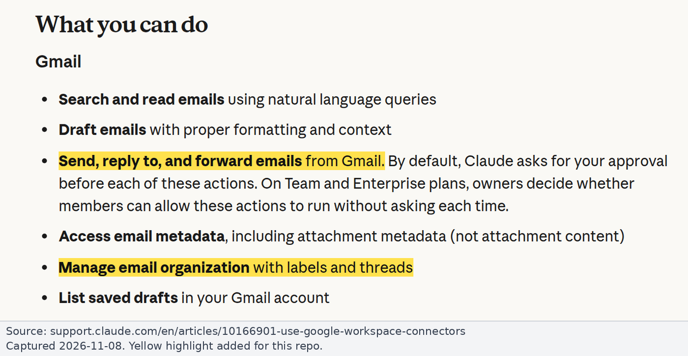
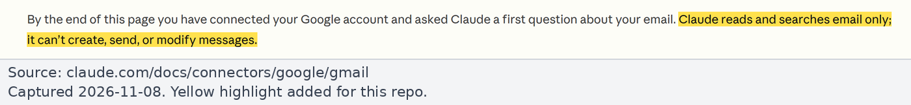
Community-observed tool names (Anthropic publishes no tool list; GitHub issues on anthropics/claude-code):
| Source | Tools seen (mcp__claude_ai_Gmail__*) |
|---|---|
| #89304 (about 2026-09) | send_message, reply, forward, create_draft, update_draft, trash_message, trash_thread, mark_message_spam, mark_thread_spam, label_message, delete_label, ... One user reports send_message succeeded from Claude Code |
| #72052 (about 2026-07) | label_thread, unlabel_thread, label_message, unlabel_message, create_label, update_label, delete_label, list_labels |
| #47383 (about 2026-05) | search_threads, label_thread, label_message |
The tool list could not be captured live during the research: an unauthenticated session shows only mcp__claude_ai_Gmail__authenticate until a Google account is connected, and connecting one would have required a real user's Google consent.
3.2 Which OAuth scopes it gets
- Verified (Anthropic): "Google's OAuth screen mentions email sending permissions." (10166901)
- Community (Google permissions page): the "Claude for Gmail" grant lists "See your profile info", "Manage drafts and send emails" and "View your email messages and settings" (#46206, #47383). One report states it as "gmail.readonly + gmail.compose/gmail.send" (#55271). Google's scope table maps those labels to
gmail.composeandgmail.readonly(Gmail scopes). Label and trash tools fail with "insufficient authentication scopes" becausegmail.modifyis missing. Send and draft work. - How to confirm for your own tenant [GWA]: Admin console > Security > Access and data control > API controls > Manage Third-Party App Access > Accessed apps > "Claude for Gmail" shows "the OAuth scopes that each app is requesting" (Google doc). Note the scopes before deciding anything.
- Can an admin narrow it? No Claude setting exists. Enterprise-managed auth has a "Scopes" step, but Gmail is not on its supported connector list (Auto-connect your organization's apps). Verified as of 2026-11-08.
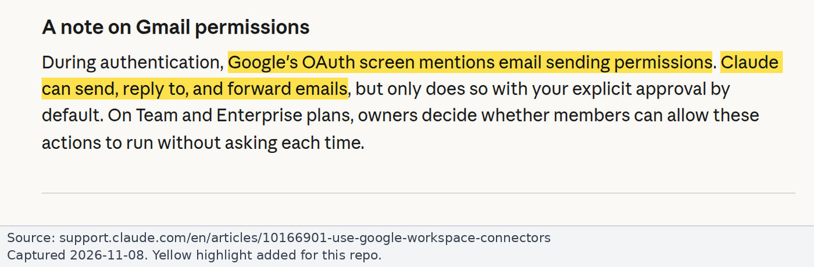
3.3 Per-tool admin controls, Team vs Enterprise
| Control | Team | Enterprise | Notes |
|---|---|---|---|
| Enable or remove the Gmail connector for the org (Organization settings > Connectors) | Yes | Yes | Members still sign in to Google individually (11176164) |
| Org-wide tool policy per tool or per group: Always allow / Needs approval / Blocked | Yes | Yes | "This applies org-wide to everyone using the connector - individual users can't override it." Example given: "Allow Claude to search and summarize email, but prevent it from sending messages." (11176164) |
| Per-role connector and tool grants (custom roles) | No | Yes | Grants add up across roles; the org policy is the ceiling; "Blocked: The connector or tool is hidden. Claude can't see it or call it." (13930452) |
| Restrict verified-domain connectors (stop personal Claude accounts connecting work Gmail) | No | Yes | Gmail is on the supported list; not retroactive; fails open when identity can't be checked (15402193) |
| Member connector requests | On by default | Off by default | An Owner can "Decline it and block the connector" (11176164) |
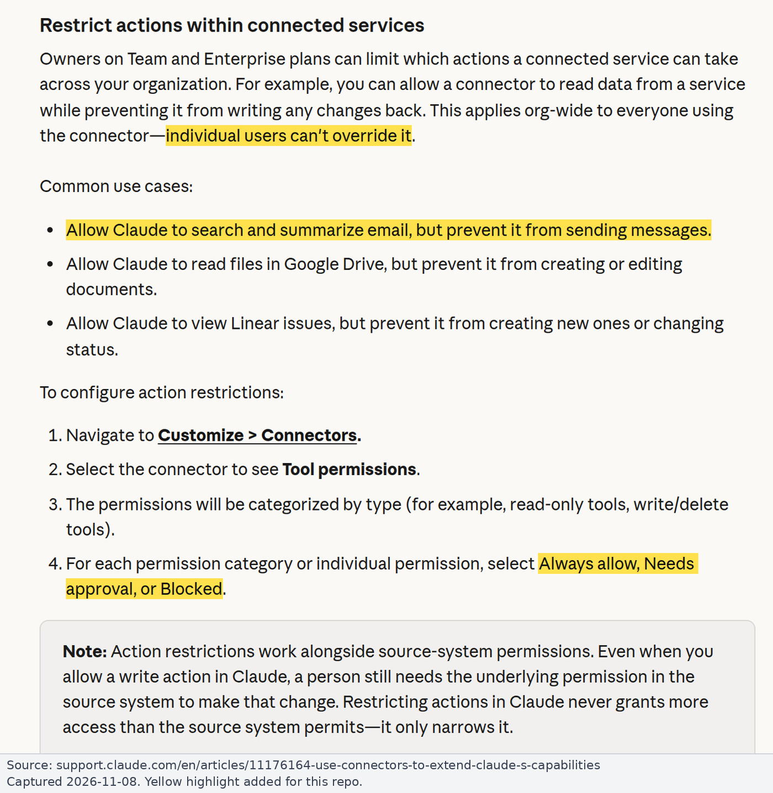
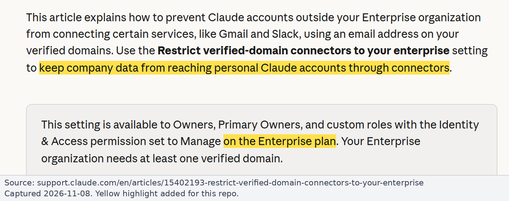
Where the tool policy is enforced (Verified, 13930452 "Where connector permissions apply"):
- "Connector permissions are enforced on Anthropic's servers." Coverage: web and desktop full; mobile "calls to them are rejected"; Cowork same as web; Claude Code "Blocked tools are rejected and appear as disabled".
- "Access fails toward denying, never toward granting."
- They don't cover locally run connectors, or Cowork on third-party platforms.
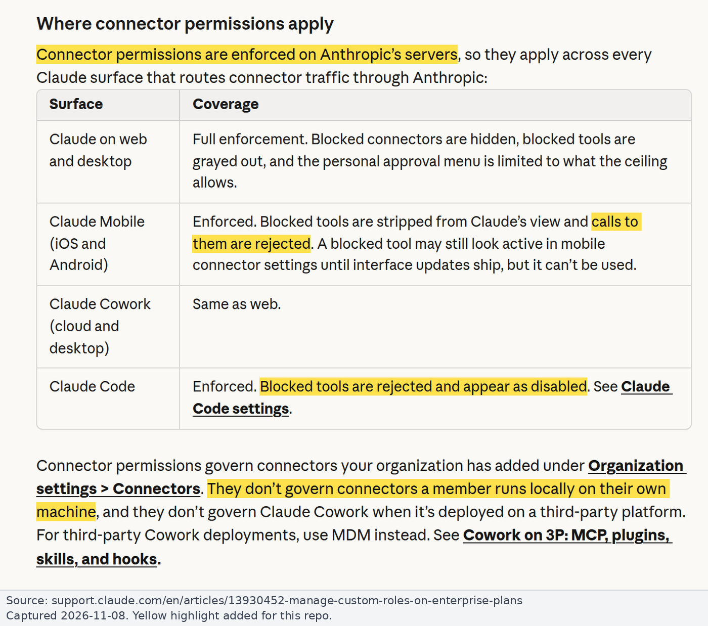
In Claude Code (mcp.md):
- A
blockedtool is filtered out before Claude sees it. - The Desktop app's local and SSH sessions also withhold
blockedtools. - An org
askis not delivered there, so in those sessions onlyblockedis reliable.
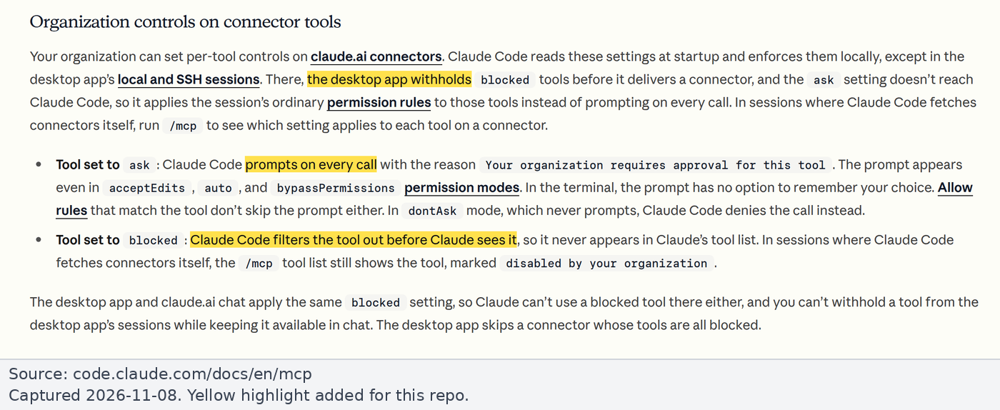
Caveats that shape the setting you choose:
- Use Blocked, not Needs approval, for every write tool.
- Research mode: "Claude can invoke tools from your connectors automatically without further approval" (11175166).
- Org
askdoesn't reach Desktop local sessions (above). - Community reports say approvals were not shown in Claude Code (#89304, which cites #64521 and #65843, all closed unfixed).
- New tools the connector adds later: the docs don't say what default a newly added tool gets. The connector has gained write tools over time. Set the whole write/delete group to Blocked rather than single tools, and re-check the tool list after Anthropic release notes. A group-level Blocked presumably catches new write tools, but that is Inferred.
- The grouping into "read-only tools" and "write/delete tools" is presumably driven by MCP annotations. Anthropic's directory rule says annotations "determine auto-permissions in Claude" (review criteria). The grouping is only as good as the annotations, so review individual tools once.
3.4 Setup steps for the built-in route (Claude Owner)
Step-by-step in runbooks/claude-org.md. In short:
- Organization settings > Connectors > Browse connectors > Gmail > "Add to your team".
- Open the Gmail connector's Tool permissions. Set the write/delete group, and every send, reply, forward, draft, trash, spam and label tool, to Blocked. Set read tools to Always allow or Needs approval.
- Enterprise only: turn on Restrict verified-domain connectors to your enterprise; optionally use custom roles to grant Gmail only to some groups.
- Claude Code: nothing extra is needed for
blockedto apply. For defence in depth, add managed deny rules (section 4.2). - [GWA] In Google API controls, find "Claude for Gmail" under Accessed apps and record its scopes. Set it to Trusted for the OUs that should use it, otherwise Workspace may show "Access blocked" (10166901 troubleshooting).
3.5 If the built-in connector requests more than read scope (it does)
- Option A: accept it. Rely on Anthropic's server-side Blocked policy. Note the residual risks: the credential can send; on Team, a personal Claude account can connect the same work Gmail with no org policy; any future policy bug.
- Option B: restrict "Claude for Gmail" at Google to
gmail.readonlyvia "Specific Google data" [GWA]. - Google: Specific Google data apps "can request data access only to scopes that you specify". Also: "If a configured app tries to access a Google service it doesn't have permission for, the user is blocked."
- The connector always asks for
gmail.composetoo, so sign-in is expected to fail rather than produce a partial read-only grant. Inferred, untested. Pilot it on one OU first. - Option C (recommended for a hard guarantee): set "Claude for Gmail" to Blocked at Google [GWA], leave the built-in connector disabled in Claude, and give Gmail access only through a connector whose OAuth client you own (proxy design, or Google's Gmail MCP).
- Option D: ask Anthropic for a read-only scope variant. Today the scope set is fixed by Anthropic; the scope-related GitHub issues were closed as stale.
4. Claude surfaces in detail
4.1 claude.ai web, desktop chat and mobile (Team and Enterprise)
- Who can add connectors: on Team, only Owners and Primary Owners can add custom connectors. On Enterprise, Owners, Primary Owners and custom roles with Libraries "Manage" can (11175166). Members cannot add an unrestricted Gmail MCP to the org account themselves.
- Custom connectors are reached from Anthropic's cloud, so the server must be publicly reachable or exposed through MCP tunnels. Auth options when adding one: "Sign in now / when needed / No sign in". OAuth client: "Claude's published identity / Register automatically / Use your own OAuth client". Fixed request headers are also possible (11176164). The OAuth callback is
https://claude.ai/api/mcp/auth_callback(from Google's Gmail MCP guide). - The tool policy also covers custom connectors. "Connector permissions govern connectors your organization has added under Organization settings > Connectors" (13930452). That includes an org-added Payhawk or proxy connector. Verified for the role grants; the org-wide policy is described as per connector.
- Personal accounts: nothing in Claude org settings governs a member's personal Claude account. Enterprise's verified-domain restriction closes this for Gmail; Team has no equivalent. Google admin blocking the app closes it on any plan [GWA].
4.2 Claude Code
Claude Code gets connectors from claude.ai only when it is signed in with a claude.ai subscription login. They are not loaded with ANTHROPIC_API_KEY, ANTHROPIC_AUTH_TOKEN, apiKeyHelper or a third-party provider (mcp.md).
That matters here: nexos.ai documents running Claude Code through its gateway with ANTHROPIC_BASE_URL=https://api.nexos.ai and ANTHROPIC_AUTH_TOKEN (nexos Claude Code integration). Such sessions get neither claude.ai connectors nor server-managed settings (server-managed settings: delivery "requires the session to authenticate with" a Team or Enterprise login). Only MDM or file-deployed managed settings govern them.
Controls, all Verified from code.claude.com:
| Control | What it does | Key facts |
|---|---|---|
| Org connector tool policy | blocked tools are filtered out; an ask tool prompts on every call even in bypassPermissions |
Applies to connectors Claude Code fetches. Desktop local and SSH sessions get only blocked (mcp.md) |
| Permission rules | "deny": ["mcp__claude_ai_Gmail__send_message", ...] or "mcp__claude_ai_Gmail__*". A deny rule from any level wins; managed rules can't be overridden, not even by --allowedTools |
allowManagedPermissionRulesOnly makes managed settings the only source of rules (permissions.md). mcp__ rules with parentheses are skipped in settings files |
| MCP allowlist / denylist | allowManagedMcpServersOnly: true + allowedMcpServers: [{serverUrl: "https://gmail-guard.example.com/*"}] (only these load); deniedMcpServers: [{serverName: "claude.ai Gmail"}] |
serverName is "not a security control" for user-added servers; prefer serverUrl. The denylist always wins (managed-mcp.md) |
| Exclusive set | managed-mcp.json loads only listed servers and suppresses claude.ai connectors unless allowAllClaudeAiMcps: true |
File only (MDM); can't be delivered server-side |
| Provide a server to all | managedMcpServers: { "gmail-guard": { "type": "http", "url": "..." } } |
v2.1.259+; skips the allowlist check |
| Pin scopes for user-added OAuth servers | "oauth": { "scopes": "https://www.googleapis.com/auth/gmail.readonly" } |
Overrides scopes the server advertises (mcp.md) |
| Hooks | A PreToolUse hook can deny any call; deny rules hold even if a hook says allow; allowManagedHooksOnly restricts hooks to managed ones |
permissions.md |
| Disable claude.ai connectors | disableClaudeAiConnectors: true (any source set to true wins) |
Fetched connectors only |
| Delivery | Server-managed (Team and Enterprise Owners; fetched at startup, refreshed hourly) or endpoint-managed (MDM, registry, managed-settings.json) |
"Endpoint-managed settings provide stronger security guarantees" (server-managed-settings.md) |
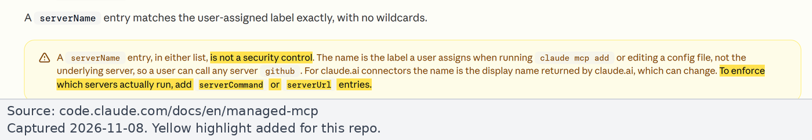
Known gap (Community): in Claude Desktop's Code tab, local sessions mount claude.ai connectors under connection UUIDs (mcp__<uuid>__send_message). Rules written as mcp__claude_ai_Gmail__* silently don't match there (#92787, open). A server-segment glob such as mcp__*__send_message reportedly works but loses per-connector precision. The org blocked policy is the reliable control for Desktop sessions.
Example managed settings and deployment steps are in runbooks/claude-code-managed-settings.md.
4.3 Claude Desktop managed policies
Verified (12622667, 10949351):
isLocalDevMcpEnabled=falsestops local MCP servers that users add inclaude_desktop_config.jsonfrom starting.isDesktopExtensionEnabled=falseandisDesktopExtensionDirectoryEnabled=falseturn off extensions and their directory. Team and Enterprise Owners can also run an extension allowlist.- On Enterprise these can also be set in Organization settings > Plugins > Connectors ("Allow local MCP servers", "Block all desktop extensions"). On Team they need MDM.
forceLoginOrgUUIDpins the app to your org, so a personal account can't be used in the managed app.- Remote connectors in Desktop are brokered through claude.ai, so the org tool policy applies to them.
4.4 Claude API and Agent SDK (brief)
- MCP connector (beta,
mcp-client-2025-11-20/mcp-client-2026-09-15): for an allowlist, setdefault_config: {enabled: false}and enable named tools inconfigs.mcp-client-2026-09-15can pin a server's tool list. You obtain and passauthorization_tokenyourself, so you also choose the OAuth scopes (MCP connector). - Agent SDK:
disallowed_tools/allowed_tools, permission modes,canUseTool. Deny rules win even inbypassPermissions(SDK permissions). - These are developer-side controls: API usage doesn't see the claude.ai org connector policy (server-managed settings require a Team or Enterprise login).
5. nexos.ai
Identity confirmed: docs.nexos.ai describes "nexos.ai, your all-in-one AI platform for business", with a Workspace (Chat, Agents, Integrations) and a Gateway API.
| Area | What the docs say | Status |
|---|---|---|
| Built-in Gmail | Admin: Management > Apps > Gmail > Active. Then members connect their own Google account in Settings > My Apps, and turn Gmail on per chat (+ > Integrations) or per agent (Studio > Settings > Integrations). Purpose: "summarize threads, pull context ... draft clearer replies" (Gmail) | Verified. Tools and OAuth scopes are not documented |
| Org controls | Settings > Organization > Integrations: Active / Inactive per integration (Integrations) | Verified. No per-tool toggle documented |
| Roles | Owner (org-wide incl. apps), Team Owner (team models; "Apps remain managed at the company level"), User (Roles). Teams control models and API keys (Teams) | Verified. No team-level integration or tool restriction |
| Approvals | HITL: agent pauses before "an action that changes something in another tool". Per-integration toggle inside each agent's settings. "Always approve" exists. "Read-only actions ... continue without asking" (HITL). Changelog (Jun 29) says it "works in both chat-based workflows and Agents" | Verified. Advisory. How nexos decides read vs write isn't documented (possibly MCP annotations; Inferred) |
| Custom MCP | Management > Apps > Add custom MCP. Streamable HTTP only, internet-reachable. Auth: "API keys, credentials ... Each user will be able to provide their own API key individually". Org-level: "all teams and members in your workspace can use them once enabled". IP allowlisting on request (Custom MCP) | Verified. OAuth for custom MCP not documented |
| Plans | Billing shows "1-month plan, 12-month plan, or Enterprise" (Billing). Public pricing (nexos.ai/pricing) is behind a Cloudflare bot check and was not readable. Third-party summaries mention self-serve per seat and custom Enterprise | Docs verified; plan feature matrix not verified. No doc ties integration controls to a plan |
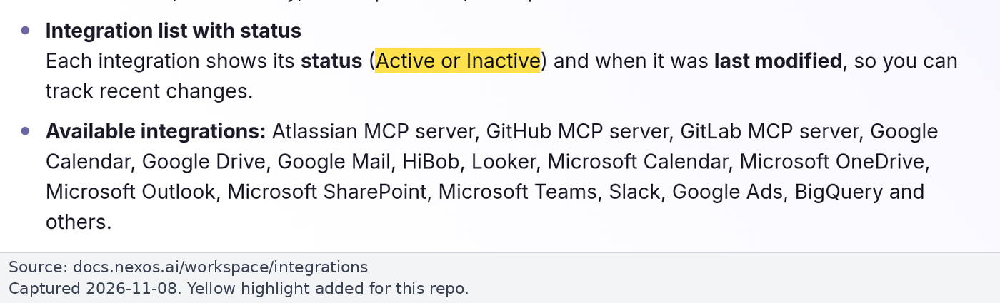
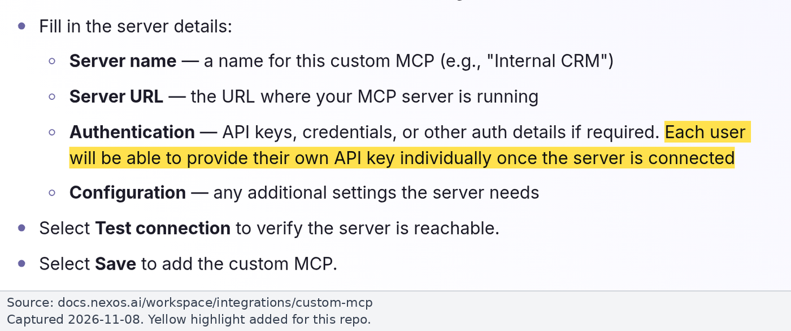
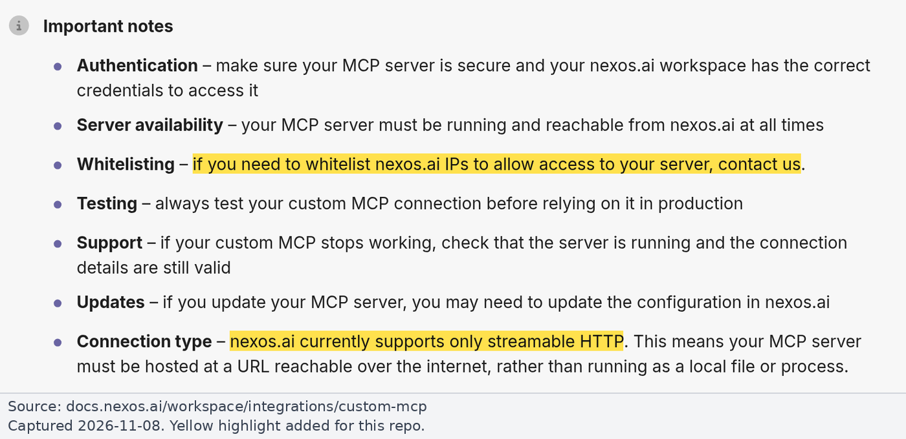
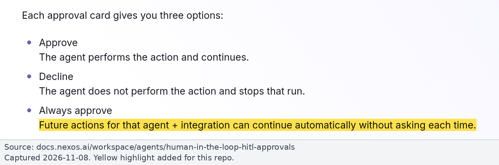
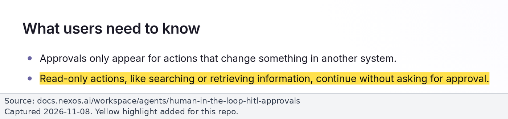
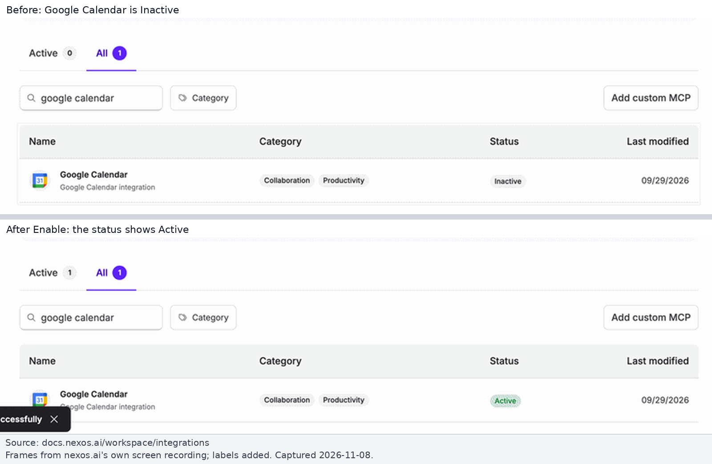
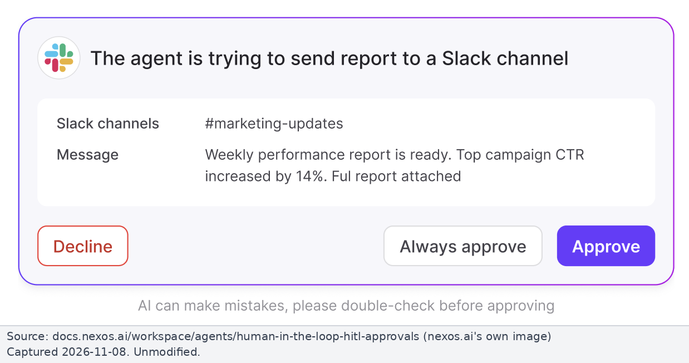
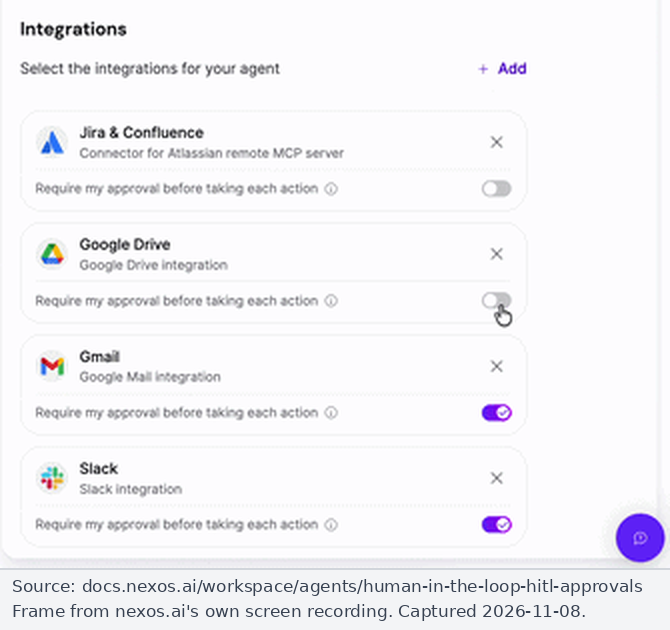
What works in nexos: keep the built-in Gmail integration Inactive. Add the read-only proxy as a custom MCP. Because nexos custom MCP auth is per-user API keys, the proxy needs a personal-key mode (proxy design).
The Google layer also applies to nexos [GWA]: find nexos's Gmail OAuth app under Accessed apps, check its scopes, and set it to Blocked (or Specific Google data) so a member can't get write access to Gmail through nexos.
Steps: runbooks/nexos.md.
6. Provider and infrastructure side
6.1 Gmail OAuth scopes
From Gmail API scopes:
| Scope | Google's description | Class |
|---|---|---|
gmail.readonly |
View your email messages and settings | Restricted |
gmail.metadata |
View your email message metadata such as labels and headers, but not the email body | Restricted |
gmail.labels |
See and edit your email labels | Non-sensitive |
gmail.send |
Send email on your behalf | Sensitive |
gmail.compose |
Manage drafts and send emails | Restricted |
gmail.modify |
Read, compose, and send emails from your Gmail account (no permanent delete) | Restricted |
https://mail.google.com/ |
Read, compose, send, and permanently delete all your email | Restricted |
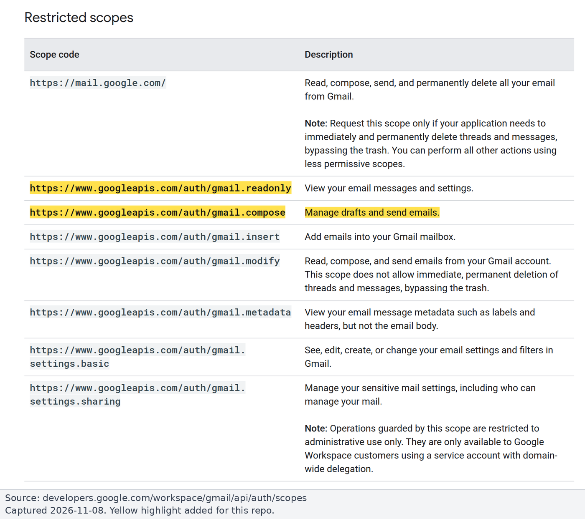
A token holding only gmail.readonly (plus openid email) cannot send, draft, label or delete. Google enforces this regardless of the client.
gmail.readonly is a restricted scope. External apps need Google verification. An Internal app (a GCP project owned by your Workspace org, consent screen set to Internal) is exempt: "Internal Use apps: The app is only used by people in your Google Workspace or Cloud Identity organization" (verification exceptions).
6.2 Google Workspace admin controls [GWA]
From Control which apps access Google Workspace data. Requires the Service Settings administrator privilege.
- Path: Admin console > Security > Access and data control > API controls > Manage App Access.
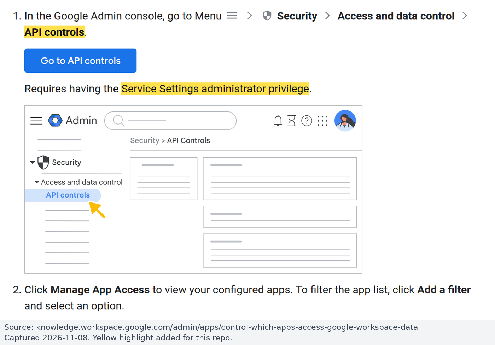
- Per-app levels:
- Trusted: all services.
- Limited: unrestricted services only.
- Specific Google data: "Can request data access only to scopes that you specify". You must include the Sign-in scopes.
- Blocked: no Google data.
- Settings can differ per organizational unit.
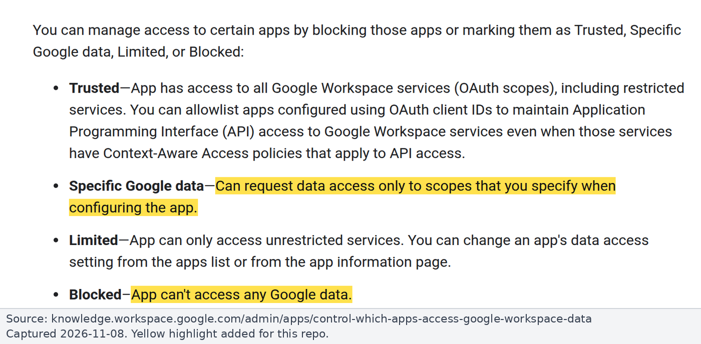
- Restricted services: setting Gmail to Restricted means only Trusted or Specific Google data apps can access it. "If you change access to Restricted, any previously installed apps that you haven't trusted stop working, and tokens are revoked." This has a large blast radius; coordinate first.
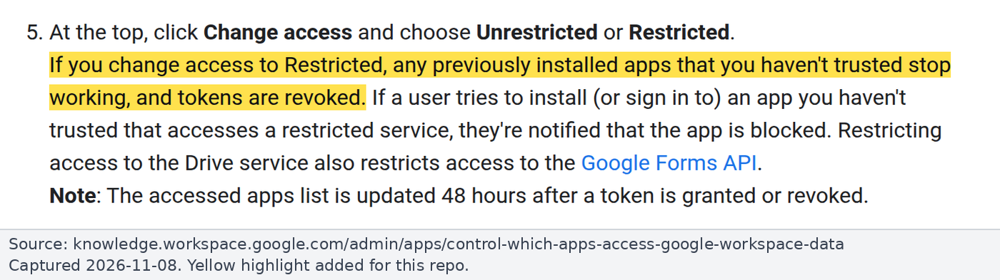
- High-risk Gmail scopes can be restricted separately. The list includes
gmail.compose,gmail.send,gmail.modify,gmail.readonlyandmail.google.com. - Unconfigured third-party apps: allow all (default), allow only basic Sign-in-with-Google apps, or don't allow any. Internal apps are trusted only if "Trust internal apps" is checked. Leave it unchecked so only explicitly configured clients reach Gmail.
- Visibility: "Accessed apps" lists apps that hold tokens and their requested scopes. Use it to audit Claude, nexos and the proxy.
- Domain-wide delegation (162106, super admin): authorize a service account client ID for listed scopes, e.g.
gmail.readonlyonly. The scope floor is hard, but the service can impersonate every user. For an interactive assistant, per-user OAuth is safer. DWD only fits if the proxy must act without each user signing in.
6.3 Google's own Gmail MCP server (Developer Preview)
From Configure the Gmail MCP server (page updated 2026-11-05) and the MCP reference.
- Endpoint:
https://gmailmcp.googleapis.com/mcp/v1, Streamable HTTP, OAuth 2.0. - Prerequisites:
- Google Workspace Developer Preview Program membership.
- Gmail API and the Gmail MCP API enabled in your GCP project.
- An OAuth client marked "Use this client for an AI-powered agent".
- Claude setup (Google's instructions): Web OAuth client with redirect
https://claude.ai/api/mcp/auth_callback. Then in Claude: Admin settings > Connectors > Add custom connector, URLhttps://gmailmcp.googleapis.com/mcp/v1, client ID and secret under Advanced. - Scopes: Google's guide configures
gmail.readonly+gmail.compose.
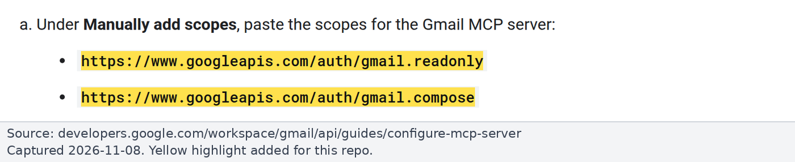
Per-tool annotations and scopes, as published by Google (one page per tool):
| Tool | readOnlyHint | destructiveHint | Works with gmail.readonly? |
|---|---|---|---|
search_threads |
yes | no | yes |
get_thread |
yes | no | yes |
get_message |
yes | no | yes |
list_labels |
yes | no | yes |
list_drafts |
yes | no | yes |
create_draft |
no | no | no (needs compose / modify) |
label_message, label_thread |
no | no | no (needs modify) |
unlabel_message, unlabel_thread |
no | yes | no (needs modify) |
create_label |
no | no | not stated |
There is no send tool. With a token that holds only gmail.readonly, every write tool fails at Google, and the five read tools work.
Caveats:
- It is Developer Preview, under preview terms, and may change.
- Whether Claude's custom connector lets you pin the requested scopes to
gmail.readonlyisn't documented. The server's metadata will likely advertise compose. A Google admin can enforce the floor by setting your OAuth client to Specific Google data =gmail.readonly[GWA]. Whether the sign-in then fails or degrades is untested. - Google requires prompt-injection screening (Model Armor or your own) (Workspace MCP security).
6.4 MCP tool annotations: does anything enforce them?
- Spec (tools, 2026-07-28): "clients MUST consider tool annotations to be untrusted unless they come from trusted servers". The schema adds: "Clients should never make tool use decisions based on ToolAnnotations received from untrusted servers."
- Claude (claude.ai): directory connectors must set
readOnlyHint/destructiveHint. "These determine auto-permissions in Claude. Read-only tools can run without per-call confirmation, and destructive tools always prompt." (review criteria). So annotations set the defaults and grouping, not a hard block. Hard blocking is the Owner's Blocked policy. - Claude Code:
readOnlyHintlets read-only calls run in parallel and be retried once. It is not a permission control (mcp.md). - nexos: HITL classifies "read-only actions"; the mechanism is not documented.
- For a proxy: set accurate annotations (readOnlyHint true on exposed read tools) for good client UX, but enforce in the proxy, never by trusting upstream annotations.
6.5 Payhawk MCP
From Payhawk Help Center: About (2026-10-28), Connecting, Tool reference (2026-09-15), FAQ, Troubleshooting, Developer API.
- Official and hosted by Payhawk:
https://mcp.payhawk.com/mcp(Streamable HTTP). Not in app directories; added manually. - Auth: OAuth with the user's own Payhawk login. Dynamic registration works ("Register automatically" in Claude). Sessions last until 7 days unused, 30 days at most. The AI "sees exactly what you see in Payhawk", so Payhawk roles still apply.
- Client allowlist: "Payhawk accepts sign-ins only from the AI Assistants in the table. In any other app, the sign-in fails with an error that mentions
host-not-allowedor 'The client redirect URI is not allowed.'" The supported list: Claude, Claude Code, ChatGPT, Codex CLI, Cursor, GitHub Copilot app and VS Code, Microsoft Copilot Studio, M365 Copilot, Langdock, Notion, Dust. nexos.ai is not on the list. Requests for other apps go to support@payhawk.com.
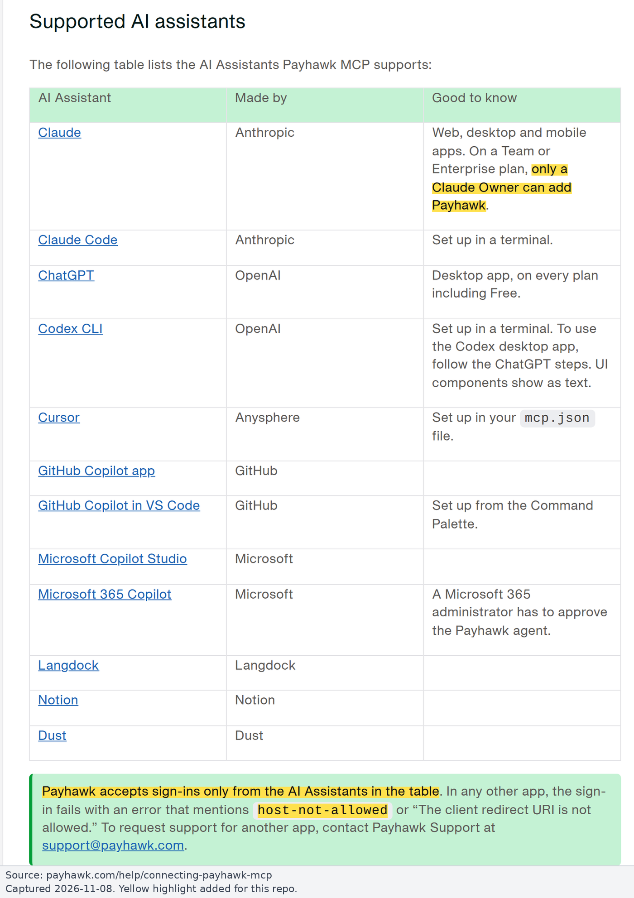
- Write safety on Payhawk's side: "Write tools ... always show a preview and need your confirmation". It "never starts a payment or a transfer". This is a user-confirmation gate (advisory), not a read-only mode.
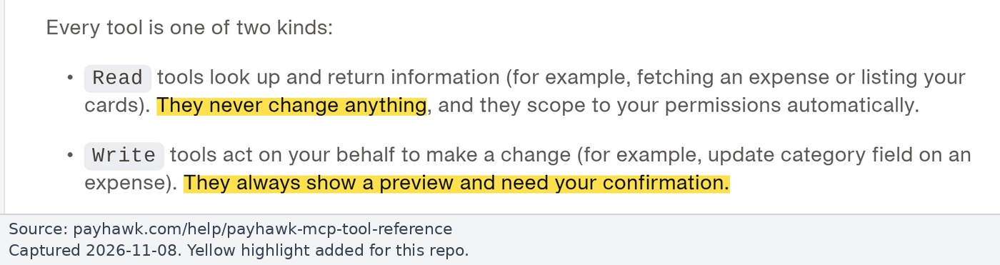
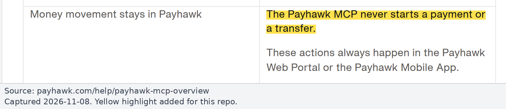
- Claude Team and Enterprise: "only a Claude Owner can add a custom connector". The Owner adds
https://mcp.payhawk.com/mcpunder Organization settings > Connectors, then members connect individually. The Claude org tool policy can then Block Payhawk's write tools (section 4.1), which covers Claude without any proxy. - Developer API: keys are created as Full access or Read-only access (Settings > Integrations > API). A key is account-wide, not per user, and is rate limited to 15 requests/s.
The full 82-tool read / write / ambiguous classification is in runbooks/payhawk.md. The split is Inferred from the names plus Payhawk's rule that read tools "never change anything"; default-deny anything unclear. Payhawk's docs don't say whether it publishes annotations, so the first check for any build is to call tools/list once and record each tool's annotations and input schema.
7. The custom read-only proxy route
The design for a generic default-deny allowlisting proxy (one codebase, one deployment per upstream; Gmail API adapter and Payhawk MCP upstream) is in proxy-design.md. It is now built in this repo as MCP Guard: Gmail on the GA Gmail API by default (Google's Gmail MCP by config), OAuth sign-in for Claude and personal keys for nexos.ai. Payhawk wiring and any real deployment are still open (DEPLOY.md).
8. Recommended layered setup
flowchart TB
subgraph L1["1. Hard floor at Google [GWA]"]
G1["Gmail reachable only by your Internal OAuth client, restricted to gmail.readonly"]
G2["'Claude for Gmail' and nexos's Gmail app Blocked"]
end
subgraph L2["2. Server floor"]
P1["Read-only proxy: allowlisted read tools only, default deny, pinned schemas, readonly tokens"]
end
subgraph L3["3. Claude org layer"]
C1["Built-in Gmail not enabled; proxy added as custom connector"]
C2["Enterprise: custom roles Block Gmail; verified-domain restriction on"]
end
subgraph L4["4. Client layer"]
K1["Claude Code: managed MCP allowlist + deny rules (server-managed + MDM)"]
K2["Claude Desktop: local MCP off, extensions controlled, forceLoginOrgUUID"]
end
subgraph L5["5. nexos"]
N1["Gmail integration Inactive; read-only proxy as custom MCP"]
end
subgraph L6["6. Monitor"]
M1["Proxy audit log, Google OAuth log events, Accessed apps review"]
end
L1 --> L2 --> L3 --> L4 --> L5 --> L6
8.1 Target: real read-only guarantee (proxy route), Team or Enterprise
- Hard floor at Google [GWA]:
- Gmail is reachable only by your Internal OAuth client, restricted to
gmail.readonly. - Anthropic's "Claude for Gmail" and nexos's Gmail app are Blocked. - Optionally, unconfigured apps limited. - Server floor: the read-only proxy exposes only allowlisted read tools (default deny, pinned schemas) and holds only readonly tokens.
- Claude org layer: - Built-in Gmail not enabled (Team: decline-and-block requests). - Proxy added as a custom connector. - Payhawk write tools Blocked if Payhawk is added directly. - Enterprise: custom roles Block Gmail; verified-domain restriction on.
- Client layer:
- Claude Code: managed MCP allowlist and deny rules, via server-managed settings plus MDM for gateway or API-key sessions.
- Claude Desktop: local MCP off, extensions controlled,
forceLoginOrgUUID. - nexos: Gmail integration Inactive; read-only proxy as custom MCP.
- Monitor: proxy audit log, Google OAuth log events, Accessed apps review.
Team vs Enterprise differences:
- Enterprise adds custom roles, the verified-domain restriction, and Desktop policy from Organization settings.
- On Team, the personal-account gap is closed only by the Google admin blocking "Claude for Gmail".
Team-plan gap: on Team there is no verified-domain restriction, so a member's personal Claude account can connect work Gmail outside the org policy. Closing that requires the Google Workspace admin to block "Claude for Gmail" at Google [GWA], with Gmail then reached only through the read-only proxy added by an Owner as a custom connector. Our plan is believed to be Team, pending confirmation.
8.2 Lighter option: built-in connector, Anthropic-enforced read-only
- Enable Gmail and set its write/delete group to Blocked; Claude Code gets the same. Enterprise: verified-domain restriction on.
- [GWA] set "Claude for Gmail" to Trusted only for the OUs that should use it.
- Fine if the team trusts Anthropic's policy layer.
8.3 Residual risks of 8.2 (why 8.1 is the guarantee)
- The token holds
gmail.compose, which can send. If Anthropic's policy is wrong or new write tools arrive unblocked, sends become possible. - Two Anthropic pages disagree about the connector's capabilities; tool lists change without notice.
- On Team, a member's personal Claude account can connect work Gmail with no org policy, unless the Google admin blocks the app (which then also blocks the org's use).
- nexos is not covered at all by Claude's policy.
9. Payhawk-specific recommendation
- Claude only: add
https://mcp.payhawk.com/mcpas an org custom connector and Block every write and ambiguous tool (tool classification). This is enforced server-side, needs no code, and keeps per-user Payhawk permissions. - Claude and nexos, or credential-level guarantee: build the Payhawk proxy (proxy design, M4). It needs Payhawk Support to allowlist the proxy redirect URI; until then, per-user Payhawk OAuth from a proxy fails with
host-not-allowed. Note that nexos.ai itself is not on Payhawk's supported list, so even the direct Payhawk MCP won't sign in from nexos today. - Separately, Payhawk roles limit what each user's MCP session can do. A finance-light role is another hard floor, but it is per user and not per tool.
Steps: runbooks/payhawk.md.
10. Steps that need a Google Workspace admin [GWA]
Consolidated, ready to hand over: runbooks/google-workspace-admin.md. API controls need the Service Settings admin privilege; domain-wide delegation needs super admin.
11. Method and evidence
No code changes were made, no accounts were connected, and no consent was given during the research. Primary sources were fetched as raw HTML or Markdown with curl (Mintlify .md pages, Intercom HTML converted to text, GitBook .md), read with grep and sed, and GitHub issues were read with the GitHub CLI. Representative fetches:
curl -sL https://code.claude.com/docs/en/{permissions,mcp,managed-mcp,server-managed-settings,settings-reference}.mdcurl -sL https://claude.com/docs/connectors/google/gmail.md(the "read-only" page) vssupport.claude.com/en/articles/10166901(send/reply/forward)curl -sL https://docs.nexos.ai/workspace/integrations/{gmail,custom-mcp}.md, plus.../agents/human-in-the-loop-hitl-approvals.md,.../settings/organization/roles-and-permissions.mdcurl -sL https://payhawk.com/help/{payhawk-mcp-overview,payhawk-mcp-tool-reference,connecting-payhawk-mcp,overview-of-the-payhawk-developer-api}.md; the tool count came fromgrep -oover the full-list table (82 unique names)- Google per-tool pages
developers.google.com/workspace/gmail/api/reference/mcp/tools_list/<tool>, parsed for "Tool Annotations" and "Requires one of the following OAuth scopes" - GitHub issues
anthropics/claude-code#46206, #47383, #55271, #72052, #89304, #92787, read in full with comments - Repo metadata and releases for
PrefectHQ/fastmcp,agentgateway/agentgateway,IBM/mcp-context-forge - nexos.ai/pricing could not be read: it serves a Cloudflare bot check, which was not circumvented.
- In an unauthenticated Claude Code session, the claude.ai Gmail connector shows only
mcp__claude_ai_Gmail__authenticate, so the live tool list could not be captured without a real Google consent.
Key sources (all checked 2026-11-08)
- Anthropic support:
- 11176164 Use connectors
- 10166901 Google Workspace connectors
- 13930452 Custom roles
- 11175166 Custom connectors
- 15402193 Verified-domain restriction
- 15537633 Enterprise-managed auth
- 12622667 Desktop enterprise config
- 10949351 Local MCP on Desktop
- Release notes: 2026-05-28 "Enterprise plans can manage connector access with custom roles"
- Claude docs:
- Gmail connector
- Getting started
- Review criteria
- MCP tunnels
- Claude Code docs:
- permissions
- mcp
- managed-mcp
- server-managed-settings
- settings-reference
- Agent SDK permissions
- Claude API: MCP connector
- Google:
- Gmail scopes
- App access control
- DWD
- Verification exceptions
- Gmail MCP setup
- Gmail MCP reference
- Workspace MCP security
- MCP spec:
- Tools (2026-07-28)
- Authorization security considerations
- nexos.ai:
- Integrations
- Gmail
- Custom MCP
- HITL
- Roles
- Teams
- Billing
- Changelog
- Claude Code via gateway
- Payhawk:
- About MCP
- Connecting
- Tool reference
- FAQ
- Troubleshooting
- Developer API
- Gateways:
- FastMCP proxy
- FastMCP visibility
- FastMCP OAuth proxy
- FastMCP Google
- agentgateway MCP authz
- Cloudflare MCP portals
- Docker
mcp gateway run
12. Open questions
The decisions that would change the recommendation are in open-questions.md.
Proxy design
Source: docs/proxy-design.md
Status: built as MCP Guard. The guard in this repo follows this design: one FastMCP codebase, one deployment per upstream, Google sign-in for Claude (OAuth) and nexos.ai (personal keys), a default-deny allowlist, a Gmail upstream on the GA Gmail API by default and on Google's Gmail MCP by config. Payhawk wiring and any real deployment are still open (see DEPLOY.md and open-questions.md). This page keeps the reasoning; where the build differs from the original proposal, it says so. Sources checked on 2026-11-08; evidence labels as in findings.md.
One generic proxy, one deployment per upstream
Recommendation: one codebase, a generic default-deny allowlisting proxy with per-upstream config, deployed as one endpoint per upstream (e.g. gmail-guard.example.com/mcp, payhawk-guard.example.com/mcp).
Why separate endpoints rather than one aggregated endpoint:
- Each Claude custom connector is one URL with one sign-in. Gmail needs Google sign-in; Payhawk needs a Payhawk sign-in. Splitting them keeps auth flows, OAuth clients, secrets and blast radius separate.
- Each can be enabled, blocked or audited on its own in Claude org settings, Claude Code allowlists and nexos.
- Aggregating would force one consent to cover several upstream identities and would merge tool namespaces.
Why one codebase rather than one bespoke server per upstream:
- The safety-critical parts (allowlist enforcement, schema pinning, audit, auth plumbing) are identical, and should be written and tested once.
There are two upstream kinds behind the same policy core:
mcpupstream: the proxy is an MCP client to an existing server (Payhawk MCP; Google Gmail MCP once acceptable). Tools are filtered and pinned.gmail_apiupstream (proposed as "native"): the guard implements read-only tools itself against the Gmail API with the person'sgmail.readonlytoken:search_threads,get_thread,get_message,list_labels,list_drafts,get_draft, named like Gmail MCP's read-only tools.
Gmail: Gmail API vs Google's Gmail MCP
For Gmail, the Gmail API (gmail_api) is the default:
- The Gmail API is GA, while Google's MCP is Developer Preview.
- We control the exact read surface.
- The token floor is the same.
- Switching to proxying Google's MCP later is a config change (
MCP_GUARD_UPSTREAM=gmail-mcp; README).
Gmail API (gmail_api) |
Proxy Google's Gmail MCP | |
|---|---|---|
| Upstream maturity | GA | Developer Preview, needs program enrollment (Configure Gmail MCP) |
| Read surface | Exactly the six tools we implement | Upstream's tools, filtered by allowlist and optional pins |
| Token floor | gmail.readonly |
gmail.readonly (if the OAuth client requests only that) |
| Kind | gmail_api |
mcp |
Payhawk
Payhawk would be an mcp upstream in front of https://mcp.payhawk.com/mcp, with the read allowlist from the Payhawk tool classification. Per-user Payhawk OAuth from the proxy is blocked today by Payhawk's redirect-URI allowlist and needs Payhawk Support to allow the proxy's redirect URI (see upstream auth and runbooks/payhawk.md). If only Claude needs Payhawk, no proxy is needed: add Payhawk directly as a custom connector and Block its write tools.
Architecture
flowchart LR
subgraph Clients
CW["Claude web / desktop / mobile<br/>(via Anthropic cloud)"]
CC["Claude Code<br/>(claude.ai connector or managedMcpServers)"]
NX["nexos.ai custom MCP<br/>(per-user key)"]
end
subgraph GP["gmail guard"]
GPC["default-deny allowlist,<br/>read-only scope check,<br/>domain check, audit log"]
GTS[("encrypted store (Redis):<br/>sign-ins, Google tokens,<br/>key hashes")]
end
subgraph PP["payhawk-ro proxy"]
PPC["same image, other config<br/>(not wired)"]
end
CW -- "Streamable HTTP + OAuth 2.1" --> GPC
CC -- "Streamable HTTP + OAuth 2.1" --> GPC
NX -- "Streamable HTTP + personal key" --> GPC
GPC --- GTS
GPC -- "per-user gmail.readonly token" --> GAPI["Gmail API"]
PPC -- "per-user Payhawk OAuth token" --> PMCP["Payhawk MCP<br/>mcp.payhawk.com/mcp"]
Transport and hosting
- Transport: Streamable HTTP only. Claude custom connectors, Claude Code
--transport httpand nexos custom MCP all support it; nexos supports only that. - Reachability: claude.ai custom connectors are called from Anthropic's cloud, so the proxy must be publicly reachable. Optionally firewall to Anthropic's IP ranges, plus nexos IPs (on request from nexos). Or keep it private behind Claude MCP tunnels. nexos needs internet reachability either way.
- Host: any platform that runs a container behind HTTPS: the company platform that runs
internal-mcp, Google Cloud Run, Kubernetes. What matters is that the Google OAuth client lives in a GCP project owned by the same Workspace org (that makes the Internal consent screen possible, so no restricted-scope verification), that secrets come from a secret store, and that more than one replica shares Redis for sign-ins (DEPLOY.md).
How users authenticate to the proxy
- Claude (web, desktop, Claude Code): the proxy acts as an OAuth 2.1 authorization server for MCP clients (protected resource metadata, DCR and/or CIMD, PKCE, consent screen). It issues its own tokens. On Gmail, signing in to the proxy is the Google sign-in, requesting
openid email https://www.googleapis.com/auth/gmail.readonly, withaccess_type=offlineso a refresh token is returned. Google notes that without it users re-auth hourly. Reject accounts whosehdclaim isn't your Workspace domain. - FastMCP's
OAuthProxy/GoogleProviderimplements exactly this "token factory" pattern. It issues its own JWTs, stores upstream tokens Fernet-encrypted, and shows a consent page against confused-deputy attacks (OAuth Proxy, Google). - nexos.ai: its custom MCP docs only mention per-user API keys, so the guard has a personal key mode (on with
MCP_GUARD_PERSONAL_KEYS=true, alongside OAuth on the same deployment). A user signs in on the proxy's web page (same Google flow), gets a revocable personal key tied to their identity and stored upstream token, and pastes it into nexos. Ask nexos whether custom MCP supports OAuth first; if it does, skip this mode. - No token passthrough. The MCP spec forbids it: "The MCP server MUST NOT pass through the token it received from the MCP client" (authorization security). FastMCP proxies forward incoming headers (including
Authorization) to HTTP backends by default. The guard setsforward_incoming_headers=Falseand sends only the person's Google token (FastMCP proxy).
Auth flow: Claude to the Gmail proxy
sequenceDiagram autonumber actor U as User participant C as Claude (claude.ai / Claude Code) participant P as gmail guard (OAuth 2.1 AS) participant G as Google OAuth participant API as Gmail API C->>P: MCP request, no token P-->>C: 401 + protected resource metadata C->>P: DCR / CIMD, authorize (PKCE) P->>U: consent page P->>G: redirect: scope = openid email gmail.readonly, access_type=offline U->>G: Google sign-in and consent G-->>P: code P->>G: exchange code G-->>P: access + refresh token (gmail.readonly only) Note over P: tokeninfo: exactly the read-only scopes<br/>(else revoke + fail)<br/>store upstream token encrypted P-->>C: proxy-issued token (not the Google token) C->>P: tools/call with proxy token Note over P: domain + hd check, allowlist, audit line P->>API: call with stored gmail.readonly token API-->>P: result P-->>C: result (size-capped)
Auth flow: nexos personal key mode
sequenceDiagram autonumber actor U as User participant W as gmail guard /keys page participant G as Google OAuth participant N as nexos.ai custom MCP participant P as gmail guard (MCP endpoint) U->>W: open proxy sign-in page W->>G: Google sign-in, scope = openid email gmail.readonly G-->>W: tokens (gmail.readonly only) W-->>U: revocable personal key tied to identity and stored upstream token U->>N: paste personal key into nexos custom MCP N->>P: tools/call with personal key Note over P: key hash to person, refresh their Google token,<br/>same checks as OAuth, audit P-->>N: result
How the proxy authenticates upstream
| Upstream | Recommended | Alternative | Avoid |
|---|---|---|---|
Gmail (gmail_api or Gmail MCP) |
Per-user OAuth with only gmail.readonly, through the org's Internal OAuth client, restricted by the Google admin to Specific Google data = gmail.readonly + sign-in scopes [GWA] |
DWD service account limited to gmail.readonly [GWA super admin]: no per-user consent, but impersonates anyone |
Any broader scope |
| Payhawk MCP | Per-user OAuth: the proxy is an OAuth client to Payhawk's authorization server, and each user signs in with their Payhawk login, so Payhawk role scoping is kept. Blocked today by Payhawk's redirect-URI allowlist; needs Payhawk Support to allow the proxy's redirect URI | Payhawk Developer API with a Read-only API key and native read tools. This works today, but it is one shared account-wide credential: every user sees everything the key sees, losing per-user permissions. Not recommended for finance data | Passing the Claude-obtained Payhawk token through the proxy: forbidden by the MCP spec, and fragile because of token audience |
| Payhawk, Claude-only | No proxy: add Payhawk directly as a Claude custom connector and Block its write tools in the org policy (enforced server-side) |
Policy core (default deny)
- One
guard.yamlwith one entry per upstream (configuration.md):
yaml
upstreams:
gmail:
kind: gmail_api
url: https://gmail.googleapis.com
google_scopes: [https://www.googleapis.com/auth/gmail.readonly]
allow: [search_threads, get_thread, get_message, list_drafts, get_draft, list_labels]
# anything not listed is denied
- Listing and calling: FastMCP's
Visibilitytransforms hide everything, then show the allowlisted names. A hidden tool is left out oftools/listand refused ontools/call("Unknown tool") without reaching the upstream, whether or not the client listed first. - Pins (optional,
mcpupstreams): a pinned tool whose definition hash (name, description, input schema) changes is dropped from listing and calling, with a warning carrying the new hash. The proposal made pins mandatory for every tool; the build keeps the draft's plain name allowlist and makes pins opt-in, because the default Gmail upstream is the guard's own code. - Read-only scope floor:
google_scopesmust be.readonlyscopes, and every token is checked against exactly those (plus sign-in scopes) on every request. - Annotations: the guard passes upstream annotations through for
mcpupstreams and setsreadOnlyHinton its own Gmail tools; decisions never depend on them. - Other MCP features: resources, prompts and resource templates are never offered.
- Not built: per-tool argument constraints (every allowed tool is read-only whatever its arguments) and prompt-injection screening of responses (Google requires screening such as Model Armor for its own Workspace MCP servers).
- Response handling: results over 1 MB are cut; Gmail bodies at 20,000 characters. A per-person rate limit protects the Gmail quota everyone shares.
flowchart TD
R["Incoming MCP request"] --> T{"Google token: exactly<br/>the read-only scopes?"}
T -- no --> X["401 (revoked at Google)"]
T -- yes --> D{"verified Workspace<br/>account of the domain?"}
D -- no --> E0["Only example.com accounts..."]
D -- yes --> M{"method"}
M -- "tools/list" --> L["Only allowlisted tools<br/>(pinned ones only if unchanged)"]
M -- "tools/call" --> C1{"allowlisted<br/>(and pin matches)?"}
C1 -- no --> E["Unknown tool, nothing forwarded,<br/>audit deny"]
C1 -- yes --> RL{"within rate limit?"}
RL -- no --> E2["Rate limit exceeded, audit deny"]
RL -- yes --> F["Call upstream with the person's<br/>read-only Google token"] --> S["Size cap, audit allow"]
M -- "resources / prompts" --> N["Nothing offered"]
Logging and audit
- One JSON line per tool call, after it ran:
upstream,person(email),client(oauthorpersonal_key),tool,decision(allow / deny),outcome(ok / error / refused / rate_limited),duration_ms(format). - No arguments, results or tokens. (The proposal had an argument hash; the build leaves arguments out entirely.)
- Ship logs to the platform's log store, then to a SIEM. Alert on
denywithrefused(an agent trying a tool it doesn't have) and on the pin-drift warning. - Correlate with Google Workspace OAuth log events [GWA] and with the Claude Enterprise Compliance API if on Enterprise (not researched in depth).
Wiring the proxy into each client and stopping the unrestricted path
| Step | Who |
|---|---|
Create the GCP project in the org, Internal consent screen, Web OAuth client with the guard's callbacks (https://gmail-guard.example.com/auth/callback, plus /keys/callback for personal keys), scopes openid email gmail.readonly (DEPLOY.md) |
GCP project owner in the Workspace org (Internal audience needs the org-owned project) |
Set the proxy's OAuth client in API controls to Specific Google data = gmail.readonly + sign-in scopes (or Trusted) |
[GWA] |
| Set Anthropic's "Claude for Gmail" (and nexos's Gmail app) to Blocked | [GWA] |
| Optional: unconfigured third-party apps = "basic info only" or "don't allow"; Gmail service Restricted | [GWA], with care: existing untrusted tokens are revoked |
| Claude: Organization settings > Connectors > Add > Custom > Web, proxy URL, "Sign in when needed", OAuth client "Use Claude's published identity" (CIMD, recommended) or "Register automatically" (DCR). Set every exposed tool to Always allow (they are all read) | Claude Owner |
| Claude: remove or don't enable the directory Gmail connector. Team: decline-and-block member requests for it. Enterprise: leave requests off and Block Gmail in every custom role | Claude Owner |
| Claude Enterprise: turn on Restrict verified-domain connectors | Claude Owner (or Identity & Access Manage) |
Claude Code: server-managed settings (Team and Enterprise) and MDM managed-settings.json for API-key / nexos-gateway sessions |
Claude Owner + IT |
Claude Desktop: isLocalDevMcpEnabled=false, block desktop extensions or use the allowlist, forceLoginOrgUUID |
IT (MDM); Enterprise can use Organization settings |
| nexos: Gmail integration Inactive; add the proxy as custom MCP (Streamable HTTP, personal-key auth) | nexos Owner |
The per-role runbooks: Google Workspace admin, Claude org, Claude Code managed settings, nexos.
Reuse an existing gateway or build?
| Option | Fit | Verdict |
|---|---|---|
| FastMCP v4 (Python), PrefectHQ/fastmcp: 28.3k stars, v4.1.6 released 2026-11-03 | Proxy provider for upstream MCP; enable(..., only=True) allowlist mode ("A disabled tool disappears from listings and cannot be called") (visibility); middleware for call-time checks; OAuthProxy + GoogleProvider (spec-shaped token factory, consent, encrypted token store); Streamable HTTP |
Build on it (thin layer: config, pins, audit, personal keys) |
| agentgateway (Rust, Linux Foundation): 6k stars, v1.7 | mcpAuthorization CEL rules per tool (mcp.tool.name, jwt.*); unauthorized tools are filtered from lists; acts as a resource server against Keycloak / Auth0 / Okta / ... (MCP authz, MCP authn) |
Strong policy engine, but its documented backend auth is static or passthrough. No per-user upstream OAuth to Google or Payhawk was found. It would still need an auth component and a native Gmail server. Revisit if the team later wants one central gateway |
| IBM ContextForge (Python): 4.8k stars | Virtual servers bundling selected tools, RBAC, upstream OAuth (per secondhand sources). Large surface; described by a competitor as alpha/beta without official support | Heavy for two read-only proxies; not verified first-hand |
| Cloudflare MCP server portals (managed; docs updated 2026-11-05) | Portal behind Cloudflare Access; users sign in through your IdP. Per-tool on/off, and an allowlist mode via API (default_disabled: true + updated_tools); otherwise "new tools and prompts are automatically enabled". Per-user upstream OAuth with your own OAuth client and an explicit Scope field ("Require user auth"). Access request logs; optional Gateway HTTP logs and DLP. Claude Desktop/claude.ai setup documented (redirect https://claude.ai/api/mcp/auth_callback) (MCP portals) |
Best "buy" candidate. Limits: it only fronts MCP servers, so Gmail would sit behind Google's Developer Preview Gmail MCP; no documented pinning of tool definitions (an allowlisted name whose schema changes stays exposed); nexos would need Access OAuth or a shared service token; Payhawk still needs its redirect allowlist to include Cloudflare's callback; adds Cloudflare to the data path; Zero Trust plan cost not checked |
| Google Cloud IAM deny policy on MCP tools (Google-side) | A deny policy on tools.call with the condition mcp.googleapis.com/tool.isReadOnly == false, set at organisation, folder or project level, refuses every tool Google doesn't mark read-only; but "When an MCP client calls tools/list, a list of all tools is returned, including read-write tools" (prevent read-write tool use). The page doesn't say whether Workspace MCP servers (Gmail) are covered |
Only for the gmail-mcp upstream, and only as a second layer under the guard's allowlist and the read-only scope: it trusts Google's own read-only flags and doesn't hide write tools. Test it when switching to Gmail MCP |
| Docker MCP Gateway | docker mcp gateway run --tools ... filtering; geared to local / stdio use (docs) |
Not a multi-user remote OAuth service |
| Commercial (Composio, Arcade, MintMCP, Portkey, ...) | Hosted tool catalogs and gateways | Not verified here; puts a third party in the Gmail data path |
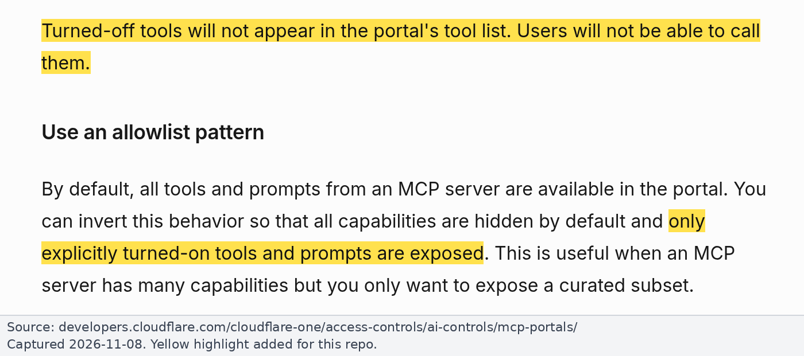
Build vs buy: the research recommends building on FastMCP over a Cloudflare portal, for four reasons:
- A native Gmail adapter on the GA Gmail API avoids depending on a Developer Preview server.
- Schema pinning is fail-closed.
- nexos can use personal keys.
- No extra vendor sits in the email and finance data path.
If the team would rather run no code, a Cloudflare portal in front of Google's Gmail MCP and Payhawk MCP, with default_disabled: true and upstream scope gmail.readonly, is the credible alternative. Spike it in M0 before committing.
Language and framework: Python 3.12+, FastMCP v4, uv, pydantic, httpx (the Gmail API calls are a handful of GETs, so no Google client library).
- FastMCP already has, as maintained code, the hardest parts to get right: the MCP OAuth authorization-server bridge with its token-factory model and Google provider; proxying to upstream MCP; allowlist-mode visibility; middleware.
- Python has first-class Google API clients.
- Alternative: TypeScript with the official MCP SDK. That works too, but the OAuth AS bridge would be hand-built.
Repo layout
mcp-readonly-proxies/
README.md # the guard: tools, settings, local test mode, Gmail API or MCP; research overview
DEPLOY.md # OAuth client, settings, hosting, connecting clients, checks, open items
guard.yaml # upstreams: gmail (gmail_api, default), gmail-mcp (mcp), Payhawk example
Dockerfile # build, test (must pass), non-root runtime: mcp-guard --port 3000
src/mcp_guard/
server.py # create_guard: FastMCPProxy or own tools, Visibility allowlist, middleware
# (DomainCheck, Audit, rate limit, Pins, UpstreamCheck, size cap), /health, main
config.py # guard.yaml and MCP_GUARD_* settings, strict
google.py # GoogleSignIn (OAuthProxy to Google), ScopeLimitedTokenVerifier, domain check
gmail_api.py # the six read-only Gmail API tools
personal_keys.py # /keys page, key verifier, X-API-Key
storage.py # Redis / file / memory, Fernet-encrypted
tests/ # unit, Gmail API, Google, storage and end-to-end tests; fakes/ (Google, Gmail API,
# Gmail MCP, local launcher); fixtures/gmail_tools.json (Gmail MCP's tool list)
docs/ # research, runbooks, this design, configuration, security model
.github/workflows/ci.yml # ruff, pyright, pytest (with Redis), image build and smoke test
Milestones
- M0, skeleton: done.
- M1, policy core: done (allowlist for list and call, optional pins, audit, size cap, rate limit).
- M2, Gmail read-only server: done: Google sign-in for Claude with the exact scope set,
hdcheck, encrypted shared store, six tools on the Gmail API, Gmail MCP selectable. Tried end to end with Claude Code against a fake Google. - M3, deploy and pilot: open. Google OAuth client [GWA]; deploy; Claude Owner adds the custom connector; test in claude.ai web, Desktop and Claude Code against real Google; confirm the built-in Gmail connector can't be connected.
- M4, Payhawk: open. Needs Payhawk Support to allow the guard's redirect URI (external lead time) and per-person Payhawk sign-in in the
mcpupstream; or a Claude-only org Blocked policy with no Payhawk proxy. - M5, nexos and hardening: personal keys and rate limits done; nexos pilot, alerting on deny and drift, and prompt-injection screening open.
Runbooks
Runbook: Google Workspace admin steps [GWA]runbook
Source: docs/runbooks/google-workspace-admin.md
For the Google Workspace admins. This lists every step in the read-only Gmail plan that needs Google Workspace admin access. Background and reasoning: findings.md. Sources checked on 2026-11-08.
Screenshots: the images below are from Google's public help pages, including Google's own illustration of where API controls sit in the Admin console. We have no Admin console access, so there are no screenshots of the real console screens (Accessed apps, an app's access settings, Gmail service access); those steps are text only.
Why we are asking
We want AI assistants (Claude, nexos.ai) to read Gmail but never send, draft, label or delete. Anthropic's built-in "Claude for Gmail" app asks Google for send permission (gmail.compose), so the only way to make read-only a property of the credential is for Google to hand out tokens that hold only gmail.readonly. A token holding only gmail.readonly (plus openid email) cannot send, draft, label or delete, and Google enforces this regardless of the client (Gmail API scopes).
Privileges needed
- API controls (steps 1 to 5, 8): the Service Settings administrator privilege (Control which apps access Google Workspace data).
- Domain-wide delegation (step 6, only if chosen): super admin (162106).
- Not GWA but org-adjacent: creating the GCP project, Internal consent screen and OAuth client needs a GCP project owner in the Workspace org.
Where the settings live
Admin console > Security > Access and data control > API controls > Manage App Access (also shown as Manage Third-Party App Access).
Per-app access levels (settings can differ per organizational unit):
| Level | Meaning |
|---|---|
| Trusted | All services |
| Limited | Unrestricted services only |
| Specific Google data | "Can request data access only to scopes that you specify". You must include the Sign-in scopes. "If a configured app tries to access a Google service it doesn't have permission for, the user is blocked." |
| Blocked | No Google data |
Steps
1. Record what each AI app is requesting
API controls > Manage App Access > Accessed apps. Find and record the scopes of:
- "Claude for Gmail" (and other Claude Google apps).
- nexos.ai's Gmail app.
"Accessed apps" shows "the OAuth scopes that each app is requesting". Note them before deciding anything. Expected (Community, from user reports): "Claude for Gmail" holds gmail.readonly + gmail.compose ("Manage drafts and send emails").
2. Set the access level for "Claude for Gmail"
Which level depends on the route the team picks (open-questions.md):
- Proxy route (credential-level read-only): set to Blocked.
- Built-in route (Anthropic-enforced read-only): set to Trusted only for the OUs that should use it; otherwise Workspace may show "Access blocked" (10166901 troubleshooting).
- Optional test: whether "Specific Google data" =
gmail.readonlybreaks the built-in connector. The connector always asks forgmail.composetoo, so sign-in is expected to fail rather than produce a partial read-only grant (Inferred, untested). Use a pilot OU.
3. nexos.ai's Gmail app
Set it to Blocked (or Specific Google data) if nexos Gmail must be read-only, so a member can't get write access to Gmail through nexos.
4. Configure our read-only OAuth client
For the proxy's OAuth client (or the Google Gmail MCP client, if that route is chosen): set it to Specific Google data with gmail.readonly + Google sign-in scopes, or to Trusted.
This client lives in a GCP project owned by the Workspace org, with an Internal consent screen. Internal apps are exempt from Google's restricted-scope verification: "Internal Use apps: The app is only used by people in your Google Workspace or Cloud Identity organization" (verification exceptions).
5. Optional hardening
- Unconfigured third-party apps: allow all (default), allow only basic Sign-in-with-Google apps, or don't allow any. Consider basic sign-in only or none.
- "Trust internal apps": leave it unchecked, so only explicitly configured clients reach Gmail.
- Gmail service = Restricted: only Trusted or Specific Google data apps can then access Gmail. Large blast radius: "If you change access to Restricted, any previously installed apps that you haven't trusted stop working, and tokens are revoked." Announce and coordinate first.
- High-risk Gmail scopes can be restricted separately. The list includes
gmail.compose,gmail.send,gmail.modify,gmail.readonlyandmail.google.com.
6. Only if chosen: domain-wide delegation (super admin)
Authorize a service account client ID for gmail.readonly only (162106). The scope floor is hard, but the service can impersonate every user. For an interactive assistant, per-user OAuth is safer; DWD only fits if the proxy must act without each user signing in.
7. Only if the Google Gmail MCP route is chosen
- Enroll in the Google Workspace Developer Preview Program.
- Enable the Gmail API and
gmailmcp.googleapis.com(Gmail MCP API) in the GCP project. - The OAuth client must be marked "Use this client for an AI-powered agent" (Configure Gmail MCP).
8. Ongoing
- Review OAuth log events in the security investigation tool.
- Re-check Accessed apps periodically to audit Claude, nexos and the proxy.
Effect on personal Claude accounts
On Claude Team, nothing in Claude's org settings stops a member's personal Claude account from connecting work Gmail. Blocking "Claude for Gmail" at Google closes that gap on any plan, but it also blocks the org's own use of the built-in connector.
Runbook: Claude Owner steps (Team and Enterprise)runbook
Source: docs/runbooks/claude-org.md
For Claude organization Owners. Covers the built-in Gmail connector's tool policy, custom connectors, the verified-domain restriction and custom roles. Background: findings.md. Sources checked on 2026-11-08.
Screenshots: the Anthropic help articles have no screenshots of Organization settings or the Tool permissions screen, and we have no Owner console access, so every step here is text only. The images below show the help-article text each step relies on.
Our plan is believed to be Team (from the onboarding email), pending confirmation.
Team-plan gap: on Team there is no verified-domain restriction, so a member's personal Claude account can connect work Gmail outside the org policy. Closing that requires the Google Workspace admin to block "Claude for Gmail" at Google [GWA] (google-workspace-admin.md), with Gmail then reached only through the read-only proxy added by an Owner as a custom connector.
What the controls do
| Control | Team | Enterprise | Notes |
|---|---|---|---|
| Enable or remove a connector for the org (Organization settings > Connectors) | Yes | Yes | Members still sign in to Google individually (11176164) |
| Org-wide tool policy per tool or per group: Always allow / Needs approval / Blocked | Yes | Yes | "This applies org-wide to everyone using the connector - individual users can't override it." (11176164) |
| Per-role connector and tool grants (custom roles) | No | Yes | Grants add up across roles; the org policy is the ceiling; "Blocked: The connector or tool is hidden. Claude can't see it or call it." (13930452) |
| Restrict verified-domain connectors | No | Yes | Gmail is on the supported list; not retroactive; fails open when identity can't be checked (15402193) |
| Member connector requests | On by default | Off by default | An Owner can "Decline it and block the connector" (11176164) |
| Who can add custom connectors | Owners, Primary Owners | Owners, Primary Owners, custom roles with Libraries "Manage" | 11175166 |
Where the tool policy is enforced (Verified, 13930452): "Connector permissions are enforced on Anthropic's servers." Web and desktop full; mobile "calls to them are rejected"; Cowork same as web; Claude Code "Blocked tools are rejected and appear as disabled". "Access fails toward denying, never toward granting." Not covered: locally run connectors, Cowork on third-party platforms.
Always use Blocked, not Needs approval, for write tools:
- Research mode: "Claude can invoke tools from your connectors automatically without further approval" (11175166).
- An org
askis not delivered to Claude Desktop's local and SSH Code sessions; onlyblockedis reliable there (mcp.md). - Community reports say approvals were not shown in Claude Code (#89304).
Route A: built-in Gmail connector with write tools Blocked
Anthropic-enforced read-only. The Google token still holds send permission (see residual risks).
- Organization settings > Connectors > Browse connectors > Gmail > "Add to your team".
- Open the Gmail connector's Tool permissions.
- Set the write/delete group to Blocked.
- Also set every send, reply, forward, draft, trash, spam and label tool to Blocked. Community-observed names:
send_message,reply,forward,create_draft,update_draft,trash_message,trash_thread,mark_message_spam,mark_thread_spam,label_message,label_thread,unlabel_message,unlabel_thread,create_label,update_label,delete_label. - Set read tools to Always allow or Needs approval. - The help article gives the path as "Customize > Connectors > select the connector > Tool permissions". The custom-roles article calls the same thing the per-connector policy "under Organization settings > Connectors". - Enterprise only: - Turn on Organization settings > Organization and access > Restrict verified-domain connectors to your enterprise. - Optionally use custom roles to grant Gmail only to some groups.
- Claude Code: nothing extra is needed for
blockedto apply. For defence in depth, add managed deny rules (claude-code-managed-settings.md). - [GWA] Ask the Workspace admins to record "Claude for Gmail"'s scopes and set it to Trusted for the OUs that should use it (google-workspace-admin.md).
- Re-check regularly. The docs don't say what default a newly added tool gets, and the connector has gained write tools over time. A group-level Blocked presumably catches new write tools, but that is Inferred. Re-check the tool list after Anthropic release notes, and review individual tools once (the read / write grouping is presumably driven by MCP annotations).
Route B: read-only proxy or Google Gmail MCP as custom connector
Credential-level read-only. Needs the guard deployed (DEPLOY.md; Claude signs in to it with OAuth) or Google's Gmail MCP set up.
- Add the custom connector: Organization settings > Connectors > Add > Custom > Web.
- URL: the guard's URL (e.g.
https://gmail-guard.example.com/mcp), or for Google's serverhttps://gmailmcp.googleapis.com/mcp/v1with client ID and secret under Advanced. - Sign-in: "Sign in when needed". - OAuth client, for the guard: "Use Claude's published identity" (Claude's client metadata document, CIMD; Anthropic's recommended option, and the guard holds it to Claude's callbacks). "Register automatically" (DCR) also works. For Google's server: "Use your own OAuth client". - Authentication settings can't be changed after the connector is added; changing them means removing and re-adding it, and every member connecting again (add an unlisted connector). - The OAuth callback ishttps://claude.ai/api/mcp/auth_callback. - The server must be publicly reachable from Anthropic's cloud, or exposed through MCP tunnels. - Tool policy: the org tool policy covers custom connectors too ("Connector permissions govern connectors your organization has added under Organization settings > Connectors", 13930452).
- Proxy: set every exposed tool to Always allow (they are all read).
- Google Gmail MCP: set
create_draft,label_message,label_thread,unlabel_message,unlabel_thread,create_labelto Blocked as a second layer. - Stop the unrestricted path: - Remove, or don't enable, the directory Gmail connector. - Team: decline-and-block member requests for it. - Enterprise: leave member requests off and Block Gmail in every custom role.
- Enterprise: turn on Restrict verified-domain connectors (Owner, or Identity & Access Manage).
- Claude Code and Desktop: see claude-code-managed-settings.md and the Desktop policies below.
- [GWA] Ask the Workspace admins to Block "Claude for Gmail" and configure the read-only OAuth client as Specific Google data (google-workspace-admin.md).
Claude Desktop managed policies
Verified (12622667, 10949351):
| Policy | Effect |
|---|---|
isLocalDevMcpEnabled=false |
Local MCP servers that users add in claude_desktop_config.json don't start |
isDesktopExtensionEnabled=false, isDesktopExtensionDirectoryEnabled=false |
Extensions and their directory are off. Team and Enterprise Owners can also run an extension allowlist |
forceLoginOrgUUID |
Pins the app to your org, so a personal account can't be used in the managed app |
- On Enterprise these can also be set in Organization settings > Plugins > Connectors ("Allow local MCP servers", "Block all desktop extensions"). On Team they need MDM.
- Remote connectors in Desktop are brokered through claude.ai, so the org tool policy applies to them.
Personal accounts
Nothing in Claude org settings governs a member's personal Claude account.
- Enterprise: the verified-domain restriction closes this for Gmail.
- Team: no equivalent. Only the Google admin blocking "Claude for Gmail" closes it [GWA], and that also blocks the org's own use of the built-in connector.
Payhawk
See payhawk.md. The same tool policy can Block Payhawk's write tools when the official Payhawk MCP is added as a custom connector.
Runbook: Claude Code managed settingsrunbook
Source: docs/runbooks/claude-code-managed-settings.md
For IT and Claude Owners. Locks Claude Code to approved MCP servers and denies Gmail write tools, independently of the claude.ai org tool policy. Background: findings.md. All facts and examples are from the cited Claude Code docs, checked on 2026-11-08.
Screenshots: these are configuration files, so there is no console to show. The images below show the cited Claude Code docs text.
Which sessions each delivery method reaches
Claude Code gets claude.ai connectors and server-managed settings only when it is signed in with a Team or Enterprise claude.ai login. Sessions on ANTHROPIC_API_KEY, ANTHROPIC_AUTH_TOKEN, apiKeyHelper or a third-party provider get neither (mcp.md, server-managed-settings.md). That includes Claude Code run through the nexos.ai gateway (ANTHROPIC_BASE_URL=https://api.nexos.ai + ANTHROPIC_AUTH_TOKEN, nexos Claude Code integration).
flowchart LR
S["Claude Code session"] --> A{"auth?"}
A -- "Team / Enterprise claude.ai login" --> SM["server-managed settings<br/>+ claude.ai connectors<br/>+ org tool policy"]
A -- "API key, auth token, apiKeyHelper,<br/>nexos gateway, 3rd-party provider" --> NO["no server-managed settings,<br/>no claude.ai connectors"]
S --> E["endpoint-managed settings<br/>(MDM, registry, managed-settings.json)<br/>apply in every case"]
| Delivery | Who sets it | Notes |
|---|---|---|
| Server-managed | Team and Enterprise Owners | Fetched at startup, refreshed hourly. Only reaches sessions with a Team or Enterprise login |
Endpoint-managed (MDM, registry, managed-settings.json) |
IT | "Endpoint-managed settings provide stronger security guarantees" (server-managed-settings.md). Needed for API-key and nexos-gateway sessions |
Use both: server-managed for logged-in sessions, plus MDM / file for everything else. Without MDM, a member can escape server-managed controls by switching auth to an API key or gateway.
File locations for managed-settings.json (managed-settings.md):
- macOS:
/Library/Application Support/ClaudeCode/managed-settings.json - Linux and WSL:
/etc/claude-code/managed-settings.json - Windows:
C:\Program Files\ClaudeCode\managed-settings.json
Controls
| Control | What it does | Key facts |
|---|---|---|
| Org connector tool policy | blocked tools are filtered out; an ask tool prompts on every call even in bypassPermissions |
Set in claude.ai, not here (claude-org.md). Desktop local and SSH sessions get only blocked (mcp.md) |
| Permission deny rules | "deny": ["mcp__claude_ai_Gmail__send_message", ...] or "mcp__claude_ai_Gmail__*". A deny rule from any level wins; managed rules can't be overridden, not even by --allowedTools |
allowManagedPermissionRulesOnly makes managed settings the only source of rules. mcp__ rules with parentheses are skipped in settings files (permissions.md) |
| MCP allowlist / denylist | allowManagedMcpServersOnly: true + allowedMcpServers (only these load); deniedMcpServers |
serverName is "not a security control"; prefer serverUrl. The denylist always wins (managed-mcp.md) |
| Exclusive set | managed-mcp.json loads only listed servers and suppresses claude.ai connectors unless allowAllClaudeAiMcps: true |
File only (MDM); can't be delivered server-side |
| Provide a server to all | managedMcpServers: { "gmail-guard": { "type": "http", "url": "..." } } |
v2.1.259+; skips the allowlist check |
| Pin OAuth scopes for user-added servers | "oauth": { "scopes": "https://www.googleapis.com/auth/gmail.readonly" } |
Overrides scopes the server advertises (mcp.md) |
| Hooks | A PreToolUse hook can deny any call; deny rules hold even if a hook says allow; allowManagedHooksOnly restricts hooks to managed ones |
permissions.md |
| Disable claude.ai connectors | disableClaudeAiConnectors: true (any source set to true wins) |
Fetched connectors only |
Example: proxy route
Only the read-only proxies load; the built-in Gmail connector, Google's Gmail MCP and the direct Payhawk MCP are denied; Gmail write tools are denied by name from any server.
{
"allowManagedMcpServersOnly": true,
"allowedMcpServers": [
{ "serverUrl": "https://gmail-guard.example.com/*" },
{ "serverUrl": "https://payhawk-ro.example.com/*" }
],
"deniedMcpServers": [
{ "serverName": "claude.ai Gmail" },
{ "serverUrl": "https://gmailmcp.googleapis.com/*" },
{ "serverUrl": "https://mcp.payhawk.com/*" }
],
"allowManagedPermissionRulesOnly": true,
"permissions": {
"deny": [
"mcp__*__send_message", "mcp__*__reply", "mcp__*__forward",
"mcp__*__create_draft", "mcp__*__update_draft",
"mcp__*__trash_message", "mcp__*__trash_thread"
]
}
}
Notes, checked against managed-mcp.md and permissions.md:
allowManagedMcpServersOnlymust sit next toallowedMcpServersin a managed source; otherwise allowlists merge from every scope, including a user's own~/.claude/settings.json. It is separate fromallowManagedPermissionRulesOnly, which locks down permission rules only.- In
deniedMcpServers,serverNameaccepts a claude.ai connector's display name (the docs' example is{ "serverName": "claude.ai Slack" }). The display name can change, so prefer aserverUrlentry where possible. InallowedMcpServers,serverNameallows only letters, numbers, hyphens and underscores; useserverUrlto allowlist a claude.ai connector. - The
allowedMcpServersURLs must also admit the claude.ai-fetched custom connector. AserverUrlentry matching the proxy URL does that, since fetched connectors are checked by URL. - Deny rules accept globs in the tool-name position, so
mcp__*__send_messagematches across servers. This matters because in Claude Desktop's Code tab, local sessions mount claude.ai connectors under connection UUIDs (mcp__<uuid>__send_message), and rules written asmcp__claude_ai_Gmail__*silently don't match there (Community, #92787, open). The glob loses per-connector precision. The orgblockedpolicy is the reliable control for Desktop sessions.
Example: built-in route, defence in depth
If the built-in Gmail connector stays enabled with write tools Blocked in claude.ai, add managed deny rules as a second layer:
{
"allowManagedPermissionRulesOnly": true,
"permissions": {
"deny": [
"mcp__claude_ai_Gmail__send_message",
"mcp__claude_ai_Gmail__reply",
"mcp__claude_ai_Gmail__forward",
"mcp__claude_ai_Gmail__create_draft",
"mcp__claude_ai_Gmail__update_draft",
"mcp__claude_ai_Gmail__trash_message",
"mcp__claude_ai_Gmail__trash_thread",
"mcp__*__send_message", "mcp__*__reply", "mcp__*__forward"
]
}
}
Tools from connectors Claude Code fetches itself appear as mcp__claude_ai_<server>__<tool> (permissions.md). The tool names are community-observed (Anthropic publishes no tool list); see findings 3.1.
Example: provide the proxy to every user
{
"managedMcpServers": {
"gmail-guard": {
"type": "http",
"url": "https://gmail-guard.example.com/mcp"
}
}
}
Requires Claude Code v2.1.259 or later. The url must be https://, and entries may not contain command, args, env, headersHelper or ${VAR} references (managed-mcp.md). Claude Desktop has a managed setting with the same name but a different shape; don't copy one into the other.
For a user-added OAuth server, oauth.scopes pins the requested scopes (single space-separated string), as in the docs' .mcp.json example:
{
"mcpServers": {
"gmail-guard": {
"type": "http",
"url": "https://gmail-guard.example.com/mcp",
"oauth": {
"scopes": "https://www.googleapis.com/auth/gmail.readonly"
}
}
}
}
Example: managed PreToolUse hook
A hook that denies write-shaped MCP tool names from any server, with allowManagedHooksOnly so users can't add their own hooks. The matcher is a regex over the tool name (hooks.md); the command prints the documented PreToolUse deny decision.
{
"allowManagedHooksOnly": true,
"hooks": {
"PreToolUse": [
{
"matcher": "mcp__.*__(send|reply|forward|create_draft|update_draft|trash|mark_.*_spam|label|unlabel|create_label|update_label|delete_label).*",
"hooks": [
{
"type": "command",
"command": "echo '{\"hookSpecificOutput\":{\"hookEventName\":\"PreToolUse\",\"permissionDecision\":\"deny\",\"permissionDecisionReason\":\"MCP write tools are blocked by organization policy\"}}'"
}
]
}
]
}
}
PreToolUse hook decisions don't bypass permission rules: deny rules still apply even when a hook returns "allow" (permissions.md). The hook is a backstop for names the deny list doesn't cover; the deny rules and the org Blocked policy remain the primary controls.
Verify
The research recommends testing with /mcp and claude doctor. Expected behavior per managed-mcp.md:
/mcpandclaude mcp list: a server blocked by policy does not appear.claude doctor: shows resolved settings and lists skipped rules (e.g.mcp__rules with parentheses, permissions.md).claude mcp addwith a URL not on the allowlist fails withCannot add MCP server "<name>": not allowed by enterprise policy; one on the denylist fails with... server is explicitly blocked by enterprise policy.
Runbook: nexos.airunbook
Source: docs/runbooks/nexos.md
For nexos.ai Owners. Background: findings.md. Sources checked on 2026-11-08.
Screenshots: the images below show the cited nexos.ai docs text, plus nexos's own UI screenshots from its public docs. We have no nexos Owner access, so there are no screenshots of our own workspace.
What nexos can and cannot restrict
| Area | What the docs say | Status |
|---|---|---|
| Built-in Gmail | Admin: Management > Apps > Gmail > Active. Members then connect their own Google account in Settings > My Apps, and turn Gmail on per chat (+ > Integrations) or per agent (Studio > Settings > Integrations) (Gmail) | Verified. Tools and OAuth scopes are not documented |
| Org controls | Settings > Organization > Integrations: Active / Inactive per integration (Integrations) | Verified. No per-tool toggle documented |
| Roles | Owner (org-wide incl. apps), Team Owner (team models; "Apps remain managed at the company level"), User (Roles, Teams) | Verified. No team-level integration or tool restriction |
| Approvals (HITL) | Agent pauses before "an action that changes something in another tool". Per-integration toggle inside each agent's settings. "Always approve" exists. "Read-only actions ... continue without asking" (HITL). Changelog (Jun 29): "works in both chat-based workflows and Agents" | Verified. Advisory: each user can switch to "Always approve". How nexos decides read vs write isn't documented (possibly MCP annotations; Inferred) |
| Custom MCP | Management > Apps > Add custom MCP. Streamable HTTP only, internet-reachable. Auth: "API keys, credentials ... Each user will be able to provide their own API key individually". Org-level: "all teams and members in your workspace can use them once enabled". IP allowlisting on request (Custom MCP) | Verified. OAuth for custom MCP not documented |
| Plans | Billing shows "1-month plan, 12-month plan, or Enterprise" (Billing). nexos.ai/pricing was not readable | No doc ties integration controls to a plan |
Conclusion: in nexos the only enforced read-only Gmail is a read-only MCP server added as a custom MCP, with the built-in Gmail integration Inactive. Claude's org policy does not cover nexos at all.
Steps
- Turn off built-in Gmail: Settings > Organization > Integrations (Management > Apps) > Gmail > Inactive.
- [GWA] Close the Google side: ask the Workspace admins to find nexos's Gmail OAuth app under Accessed apps, record its scopes, and set it to Blocked (or Specific Google data) so a member can't get write access to Gmail through nexos (google-workspace-admin.md).
- Ask nexos (support / account contact): - Does custom MCP support OAuth? If yes, nexos could sign in like Claude does, without personal keys. - The IP ranges nexos calls custom MCP servers from (IP allowlisting is available on request), so the proxy can be firewalled. - Which plan the org is on and whether any integration controls depend on it.
- Add the guard as a custom MCP (once deployed with personal keys on, see nexos-setup.md): Management > Apps > Add custom MCP, Streamable HTTP, the guard's URL. Each user signs in on the guard's
/keyspage, gets a revocable personal key, and pastes it into nexos (personal key flow). - Do not rely on HITL as the read-only control; it is advisory.
Claude Code through the nexos gateway
nexos documents running Claude Code through its gateway with ANTHROPIC_BASE_URL=https://api.nexos.ai and ANTHROPIC_AUTH_TOKEN (nexos Claude Code integration). Such sessions get neither claude.ai connectors nor server-managed settings. Only MDM or file-deployed managed settings govern them (claude-code-managed-settings.md).
Payhawk in nexos
nexos.ai is not on Payhawk's list of AI apps allowed to sign in, so even the direct Payhawk MCP won't sign in from nexos today. See payhawk.md.
Runbook: Payhawk MCPrunbook
Source: docs/runbooks/payhawk.md
For Claude Owners and Payhawk admins. Background: findings.md. Sources checked on 2026-11-08: Payhawk Help Center About (2026-10-28), Connecting, Tool reference (2026-09-15), FAQ, Troubleshooting, Developer API.
Screenshots: the Payhawk Help Center has no screenshots of the connection or admin screens, and we have no Payhawk admin access, so the steps are text only. The images below show the cited help-page text.
Key facts
- Official, hosted by Payhawk:
https://mcp.payhawk.com/mcp(Streamable HTTP). Not in app directories; added manually. - Auth: OAuth with the user's own Payhawk login. Dynamic registration works ("Register automatically" in Claude). Sessions last until 7 days unused, 30 days at most. The AI "sees exactly what you see in Payhawk", so Payhawk roles still apply.
- Client allowlist: "Payhawk accepts sign-ins only from the AI Assistants in the table. In any other app, the sign-in fails with an error that mentions
host-not-allowedor 'The client redirect URI is not allowed.'" Supported: Claude, Claude Code, ChatGPT, Codex CLI, Cursor, GitHub Copilot app and VS Code, Microsoft Copilot Studio, M365 Copilot, Langdock, Notion, Dust. nexos.ai is not on the list. Requests for other apps go to support@payhawk.com. - Write safety on Payhawk's side: "Write tools ... always show a preview and need your confirmation". It "never starts a payment or a transfer". This is a user-confirmation gate (advisory), not a read-only mode.
- Developer API: keys are Full access or Read-only access (Settings > Integrations > API). A key is account-wide, not per user, and rate limited to 15 requests/s.
Options
| Option | Covers | Enforcement | Per-user Payhawk permissions | Status |
|---|---|---|---|---|
| A. Direct custom connector in Claude, write + ambiguous tools Blocked | Claude only | Anthropic server-side | Kept | Works today, no code |
| B. Payhawk proxy with per-user Payhawk OAuth | Claude, Claude Code, nexos | Proxy default-deny allowlist | Kept | Blocked until Payhawk Support allowlists the proxy redirect URI |
| C. Payhawk proxy on a Read-only Developer API key | Claude, Claude Code, nexos | Read-only key + proxy | Lost: one shared account-wide credential; every user sees everything the key sees. Not recommended for finance data | Works today |
Separately, Payhawk roles limit what each user's MCP session can do. A finance-light role is another hard floor, but it is per user and not per tool.
Option A steps (Claude only)
- Claude Owner: Organization settings > Connectors > Add custom connector, URL
https://mcp.payhawk.com/mcp, OAuth client "Register automatically". "Only a Claude Owner can add a custom connector." - In the connector's tool permissions, set every Write and every Ambiguous tool (table below) to Blocked. Read tools: Always allow or Needs approval.
- Members connect individually with their own Payhawk login.
- Claude Code picks up the org policy automatically for logged-in sessions; see claude-code-managed-settings.md for other sessions.
Option B steps (proxy)
- Start early (external lead time): email support@payhawk.com asking them to allow the proxy's OAuth redirect URI (e.g.
https://payhawk-ro.example.com/auth/callback). Until then, per-user Payhawk OAuth from a proxy fails withhost-not-allowed. - Once allowed, deploy the proxy as an
mcpupstream in front ofhttps://mcp.payhawk.com/mcp(proxy-design.md). - Call
tools/listonce and record each tool'sannotationsand input schema. Payhawk's docs don't say whether it publishes annotations. - Pin the read allowlist from the table below; everything else is denied by default.
- If Payhawk declines: decide between Option C (shared Read-only key) and Option A (Claude only).
Tool classification (82 tools)
Payhawk doesn't mark each tool read or write. The split below is Inferred from the names plus Payhawk's rule that read tools "never change anything". Default-deny anything unclear.
| Class | Tools |
|---|---|
| Read (allowlist candidates) | list_expenses, get_expense, get_expense_approval_status, list_expense_payments, list_documents, get_invoice_inbox, list_close_blockers, list_expense_reports, get_expense_report, list_expense_subscriptions, list_mileage_claims, list_cards, get_card, list_card_requests, get_card_request, list_fund_accounts, get_fund_account, list_balances, list_fund_account_activity, get_upcoming_payments, get_transaction, get_fx_rate, review_queue, needs_my_attention, get_approval_request, list_audit_logs, list_suppliers, get_supplier, list_purchase_orders, get_purchase_order, list_purchase_order_types, list_merchants, get_merchant, list_card_acceptance_opportunities, list_export_history, list_failed_exports, list_export_templates, list_account_codes, list_tax_rates, list_custom_fields, list_expense_categories, get_expense_category, list_accounts, list_users, get_user, list_teams, list_team_members, list_spend_policies, get_spend_policy, list_comments, get_job_status, get_agent_job_status, product_help, list_playbooks, get_playbook |
| Write (deny) | upload_document, ingest_and_auto_match_receipt, create_expense, submit_expense, recode_expense, confirm_expense_subscription, manage_expense_subscription, update_card_status (freeze/unfreeze/close), create_card_request, approve_or_return, complete_expense_review, return_expense_for_review, out_of_office_delegate, manage_supplier, manage_purchase_order, run_export, manage_spend_policy, add_comment, submit_feedback, draft_playbook, manage_playbook |
| Ambiguous (deny until verified) | budgets (one tool, may read or manage), travel_agent, procurement_agent, payments_agent (agents that can act), dispatch_widget_action (runs widget buttons), insights_query_async (read analysis but starts background jobs) |
Recommendation
- Claude only: Option A. Enforced server-side, no code, per-user Payhawk permissions kept.
- Claude and nexos, or a credential-level guarantee: Option B, which needs Payhawk Support to allowlist the proxy redirect URI. Note that even the direct Payhawk MCP won't sign in from nexos today.
Local developmentrunbook
Source: docs/local-development.md
Everything here runs without a Google OAuth client. For trying the guard against your real Gmail with a pasted token, see the README's local test mode.
Setup and checks
uv sync
uv run pytest -q # everything, against fakes; no network
uv run ruff check . && uv run ruff format --check . && uv run pyright
With a Redis at hand, two more tests run: storage shared between instances, and a sign-in made on one replica used through another.
docker run -d --rm -p 6390:6379 redis:7-alpine
MCP_GUARD_TEST_REDIS_URL=redis://127.0.0.1:6390/0 uv run pytest -q
| Test file | Covers |
|---|---|
tests/test_guard.py |
The draft's guard tests: allowlist (list and call), the Gmail MCP tool fixture, domain and hd check, settings and guard.yaml validation, client registration limited to Claude, /health, upstream errors and unreachable upstreams; plus audit lines, pins, the size cap, the rate limit, header forwarding, DNS rebinding |
tests/test_google.py |
The token check: exact scopes, revocation of broader grants (deployed) and not in --dev, audience, hd |
tests/test_gmail_api.py |
The gmail_api tools against the fake Gmail API: results, GET only, id checks, errors |
tests/test_e2e_http.py |
Over real HTTP: a Claude-Code-style OAuth sign-in through the consent page and the fake Google, broad grants refused, outsiders told, Gmail MCP proxied with only the Google token, personal keys end to end, two replicas on Redis |
tests/test_storage.py |
Encryption at rest, key rotation, Redis |
tests/test_playground_check.py |
scripts/playground_check.py (the README's check with a real OAuth Playground token), run against the fake Google |
tests/fakes/fake_google.py fakes the Google endpoints the guard uses: OAuth (authorize, token
with PKCE and client authentication, refresh, revoke), tokeninfo, userinfo, the Gmail REST API
and Google's Gmail MCP server (every real tool name, each needing a gmail.readonly token).
Gmail writes are refused and recorded, so tests can assert none was attempted.
The full sign-in on your machine
tests/fakes/run_local.py runs the deployed guard (OAuth sign-in and personal keys on) on
localhost:3000, signing people in against the fake Google on port 9000:
uv run python -m tests.fakes.run_local # Gmail API upstream
uv run python -m tests.fakes.run_local --upstream gmail-mcp # fake Gmail MCP on port 9001
uv run python -m tests.fakes.run_local --hd '' # as a personal (non-Workspace) account
The fake Google approves every sign-in straight away as pat@example.com of example.com. The
real mcp-guard command has no setting that points its sign-in anywhere but Google; only this
launcher does, so never deploy it.
With Claude Code
claude mcp add --transport http gmail-local http://localhost:3000/mcp
claude # then /mcp > gmail-local > Authenticate
Claude Code opens the guard's consent page ("Claude Code wants to access gmail-guard"); choose
Allow Access, the fake Google signs you in, and Claude Code shows "Authentication successful". Ask
it to list your labels or search for "invoice"; it sees six read-only tools and nothing that can
send, delete or label. Each call leaves an audit line in the launcher's output. Remove it after
with claude mcp remove gmail-local.
With a personal key
Open http://localhost:3000/keys, choose Sign in and create a key, and copy the key. Then,
from any MCP client over Streamable HTTP:
import asyncio
from fastmcp import Client
from fastmcp.client.transports import StreamableHttpTransport
async def main(key: str) -> None:
transport = StreamableHttpTransport("http://localhost:3000/mcp", headers={"X-API-Key": key})
async with Client(transport) as client:
print([t.name for t in await client.list_tools()])
print(await client.call_tool("search_threads", {"query": "invoice"}))
asyncio.run(main("mcpg_..."))
Sign in and revoke my key on the same page makes the key stop working at once.
Configurationrunbook
Source: docs/configuration.md
The guard has two kinds of configuration:
guard.yaml(in git): the upstreams, their allowlists, pins and limits. Policy lives here, reviewed like code. This page is its reference.MCP_GUARD_*environment variables: the deployment (which upstream, its public URL, the Google OAuth client, storage, secrets). Listed in the README.
Both are strict: an unknown MCP_GUARD_* variable or an unknown key anywhere in guard.yaml
stops the guard at startup, so a typo can't quietly switch a protection off.
guard.yaml
upstreams:
gmail: # MCP_GUARD_UPSTREAM picks one; one guard process serves one
kind: gmail_api
url: https://gmail.googleapis.com
google_scopes:
- https://www.googleapis.com/auth/gmail.readonly
allow: [search_threads, get_thread, get_message, list_drafts, get_draft, list_labels]
max_response_bytes: 1000000 # optional, this is the default
rate_limit: {per_second: 2, burst: 20} # optional, these are the defaults
gmail-mcp:
kind: mcp
url: https://gmailmcp.googleapis.com/mcp/v1
google_scopes: [https://www.googleapis.com/auth/gmail.readonly]
allow: [search_threads, get_thread, get_message, list_drafts, get_draft, list_labels]
pins: # optional, mcp only
search_threads: 3f0c... # sha256 of the reviewed definition
| Key | Required | Meaning |
|---|---|---|
kind |
yes | gmail_api: the guard's own read-only Gmail tools on the GA Gmail REST API at url. mcp: an MCP server at url, called over Streamable HTTP as the signed-in person |
url |
yes | https (or a local address, for tests). For mcp it must be a *.googleapis.com host: every call carries the person's Google token, which must never go to a third party |
google_scopes |
yes | The upstream's Google scopes, asked for at sign-in next to openid and userinfo.email. Only .readonly scopes are accepted. A token holding any scope beyond these is refused (and revoked, when the guard obtained it) |
allow |
yes | Exact tool names agents may list and call. Everything else is hidden from tools/list and refused on tools/call with "Unknown tool", without reaching the upstream. Empty, padded or duplicate names are refused |
pins |
no | mcp only. Tool name (from allow) to the sha256 of its definition. See Pins |
max_response_bytes |
no | Tool results over this size are cut and end with "[Response truncated due to size limit]". Default 1,000,000 |
rate_limit.per_second, rate_limit.burst |
no | Per person, across all MCP requests (tools/list included): a sustained rate with room for a burst. Over it, the request fails with "Rate limit exceeded". Defaults 2 and 20 |
Resources, prompts and resource templates of an mcp upstream are never offered: the allowlist
only lets tools through.
gmail_api tools
All read-only, all GET requests to the Gmail API with the person's own gmail.readonly token.
Ids are checked ([A-Za-z0-9_-]{1,128}) before they go into a URL; unknown arguments are refused.
| Tool | Gmail API | Notes |
|---|---|---|
search_threads |
threads.list, then threads.get (metadata) per result |
Gmail search syntax in query; up to 50 per page; include_spam_trash |
get_thread |
threads.get |
Bodies as text (HTML turned into text); include_bodies: false for headers only |
get_message |
messages.get |
|
list_labels |
labels.list |
|
list_drafts |
drafts.list, then drafts.get (metadata) per result |
Drafts can be read, never created, changed or sent |
get_draft |
drafts.get |
Bodies are cut at 20,000 characters (or max_body_chars, if smaller). Attachments are listed by
name, type and size; their content isn't fetched.
The names match the tools Google's Gmail MCP server marks read-only, so allow is the same for
both upstreams (a test checks this against tests/fixtures/gmail_tools.json).
Pins
An allowlisted name says nothing about what the tool does. If an mcp upstream changes a tool's
description or input schema (say a read tool gains a send flag), a pin catches it: the guard
hashes the tool's name, description and input schema (canonical JSON, sha256), and a pinned tool
whose hash no longer matches is dropped from tools/list and refused on tools/call, with a
warning:
upstream=gmail-mcp tool=search_threads dropped: its definition changed (pinned 3f0c..., now 9a1b...)
To pin a tool: review its definition (as an MCP client lists it), pin it to any 64-hex value, list
tools once, and copy the now hash from the warning. When a pinned tool drops out later, review
what changed before updating the pin. gmail_api tools are the guard's own code, so they take no
pins.
Audit log
After every tool call the guard writes one JSON object per line to stdout (logger
mcp_guard.audit):
{"event": "tool_call", "upstream": "gmail", "person": "pat@example.com", "client": "oauth",
"tool": "search_threads", "decision": "allow", "outcome": "ok", "duration_ms": 21}
| Field | Values |
|---|---|
person |
The signed-in person's Google email |
client |
oauth (Claude and other MCP OAuth clients), personal_key (nexos.ai and other API-key clients), dev (a token pasted in local test mode) |
decision |
allow, or deny when the call was refused or rate-limited |
outcome |
ok; error (the upstream answered with an error, or couldn't be reached); refused (the tool isn't allowed, or its pinned definition changed); rate_limited |
duration_ms |
How long the call took in the guard, upstream included |
Arguments (search queries, ids) and results (mail) are never logged. People refused by the domain
check are logged as a warning (refused person=... not a verified example.com account) and never
reach the audit line. Other log lines are plain text on stderr.
Deploying MCP Guardrunbook
Source: DEPLOY.md
How to take the guard from local test mode (--dev) to a hosted service that people add once
and sign in to with Google, and how each client (Claude Code, Claude.ai / Desktop, nexos.ai,
others) connects to it. Settings are listed in the README; this file is the
order to do things in and why.
Status (2026-11-08): runs locally, in --dev and with the full sign-in against a fake Google
(Claude Code's OAuth flow and a personal key tried end to end); not yet deployed or tried against
real Google sign-in. Items marked Open still need a decision or a check.
Local test mode vs. deployed
--dev (local test mode) |
Deployed | |
|---|---|---|
| Who signs in | Nobody: you paste a Google token into the client's Authorization header |
Each person signs in with Google through the guard (or makes a personal key) |
| Token | From OAuth Playground; expires after 1 hour, then re-add the connector | The guard keeps each person's Google token, encrypted, and refreshes it |
| Listens on | 127.0.0.1 only | The guard's public https URL |
| Needs a Google OAuth client | No | Yes |
--dev is for trying the guard on your own machine; it can't be shared. To try the deployed
sign-in without a Google OAuth client, use the fake Google
(docs/local-development.md).
Refreshing the token in --dev
When calls fail with 401 ("bearer token is invalid, expired..."), the token has expired:
- In OAuth Playground, authorize the scopes
https://www.googleapis.com/auth/gmail.readonly https://www.googleapis.com/auth/userinfo.email(openidmay be added but isn't needed; any other scope gets the token refused) and exchange the code for tokens; copy the access token. - Replace the connector (keeping its name keeps the tool names the same):
bash claude mcp remove gmail claude mcp add --transport http gmail http://localhost:3000/mcp --header "Authorization: Bearer <token>"
Restarting the guard itself doesn't require re-adding the connector.
1. Google OAuth client (needed for any deployment)
The deployed guard runs the Google sign-in for each person and calls Gmail with that person's
own token. Google only hands out tokens to a registered OAuth client, so without one the guard
refuses to start outside --dev. Putting a gateway in front doesn't change this (see
Behind the MCP gateway).
Someone with Google Cloud access in the example.com organisation creates:
- A Google Cloud project owned by the organisation (or reuse an existing internal one). It must belong to the Workspace organisation, or the Internal audience below isn't offered.
- OAuth consent screen, user type Internal (Google Auth Platform > Audience). Only example.com
Workspace accounts can then sign in at all, which Google enforces under the guard's own domain
check.
gmail.readonlyis a restricted scope; an Internal app doesn't go through Google's verification for it. - OAuth client ID, type Web application, with the authorized redirect URIs
https://<guard public URL>/auth/callback(Claude's sign-in) and, if personal keys are on,https://<guard public URL>/keys/callback. No JavaScript origins are needed. - Gmail API enabled in the project (
gmail.googleapis.com), for the defaultgmail_apiupstream. Gmail MCP (gmail-mcp) needs more: the Gmail MCP API (gmailmcp.googleapis.com) enabled and the client marked Use this client for an AI-powered agent (README, "Gmail API or Gmail MCP").
The client ID and secret become MCP_GUARD_GOOGLE_CLIENT_ID and
MCP_GUARD_GOOGLE_CLIENT_SECRET. The secret goes straight into the secret store, never into
chat, tickets or the repo.
Then, at the Workspace level [Google Workspace admin] (runbook):
- Admin console > Security > Access and data control > API controls > Manage Third-Party App
Access > Configure new app > search by the client ID > Specific Google data with only
gmail.readonlyplus the sign-in scopes (or Trusted), for the OUs that should use the guard. - Set Anthropic's "Claude for Gmail" and nexos.ai's Gmail app to Blocked, if Gmail should be reachable only read-only. Coordinate first: blocking revokes existing tokens for those apps.
Scopes
Add these to the consent screen's scopes (Google Auth Platform > Data access). They are all the guard asks for at sign-in; nothing else is needed.
| Scope | Type | Why |
|---|---|---|
openid |
Non-sensitive | Signs the person in |
https://www.googleapis.com/auth/userinfo.email |
Non-sensitive | The person's email and whether Google verified it, for the domain check and the logs |
https://www.googleapis.com/auth/gmail.readonly |
Restricted | Reads mail, threads, drafts and labels for the allowed tools; Google refuses any change |
The first two are fixed in the code (IDENTITY_SCOPES in config.py); the Gmail one comes from
google_scopes in guard.yaml, which only accepts .readonly scopes. The guard checks every
token Google hands it: a token holding any other scope is refused, and revoked at Google, so a
broader grant (say from an earlier app using the same client, or a consent screen with extra
scopes) can't be used through it.
The consent screen is the only place you enter them by hand: the guard already requests them at
sign-in, and no environment variable sets scopes. These are not the OAuth Playground scopes from
--dev. Playground isn't used in a deployment, and openid is required here but optional there.
2. Settings for the deployment
| Variable | Value |
|---|---|
MCP_GUARD_UPSTREAM |
gmail |
MCP_GUARD_BASE_URL |
The guard's public https URL, the same one used in the redirect URIs |
MCP_GUARD_GOOGLE_CLIENT_ID, MCP_GUARD_GOOGLE_CLIENT_SECRET |
From step 1; the secret is masked |
MCP_GUARD_ALLOWED_DOMAIN |
example.com |
MCP_GUARD_JWT_SIGNING_KEY (recommended) |
A long random value, masked. Left out, it's derived from the client secret, and rotating that secret signs everyone out |
MCP_GUARD_STORAGE_URL |
rediss://... (see step 3) |
MCP_GUARD_STORAGE_ENCRYPTION_KEYS (recommended) |
A Fernet key, masked: python -c 'from cryptography.fernet import Fernet; print(Fernet.generate_key().decode())' |
MCP_GUARD_PERSONAL_KEYS |
true if nexos.ai (or another API-key client) will use the guard |
MCP_GUARD_CLIENT_REDIRECT_URIS |
Leave unset for Claude only; add other clients' callbacks here (see Other MCP clients below) |
Secrets go where internal-mcp keeps its own for now: masked, protected CI/CD variables that the
platform passes to the pod as environment variables. Any other MCP_GUARD_* variable makes the
guard refuse to start, so a typo can't silently switch something off.
3. Hosting
- Image:
Dockerfilein the repo root: a build stage, a test stage whose marker the runtime stage needs (a failing test fails the build), and a non-root runtime (uid 10001). The command ismcp-guard --port 3000; it listens on0.0.0.0by default. GitHub Actions builds it on every pull request; see Open items for the company's GitLab pipeline. - Sign-in state: client registrations, each person's encrypted Google tokens and personal-key
hashes are kept in one key-value store, encrypted with
MCP_GUARD_STORAGE_ENCRYPTION_KEYS. - More than one replica: Redis (
MCP_GUARD_STORAGE_URL=rediss://...). The guard keeps no MCP session state of its own (stateless HTTP), so any replica can serve any request once the sign-ins are shared; a test signs in on one replica and calls through another. - One replica: a persistent volume and
MCP_GUARD_STORAGE_URL=file:///data(orFASTMCP_HOME). The image setsFASTMCP_HOME=/app/data; mount the volume there. Without one, sign-ins vanish on every restart and everyone signs in again. - The root filesystem can be read-only as long as the storage path is the only writable one.
- Rotating the encryption key: put the new key first, keep the old one after it until every value has been rewritten or has expired, then drop it. A value only the dropped key could read counts as missing (that person signs in again), not as an error.
- Health check:
GET /healthreturns{"status":"ok","upstream":"gmail"}. It needs no sign-in and doesn't call Gmail, so use it for liveness and readiness. - Network: inbound https from people's browsers and their MCP clients (Claude.ai's servers and
nexos.ai call it too, so it must be reachable from the internet if they are used); outbound to
gmail.googleapis.com(orgmailmcp.googleapis.com),oauth2.googleapis.com,accounts.google.comandwww.googleapis.com, plus Redis. - TLS: terminate in front of the guard.
MCP_GUARD_BASE_URLmust be https; Google refuses non-https redirect URIs except localhost. - Logs: one JSON line per tool call on stdout (
mcp_guard.audit, format in docs/configuration.md), plus a warning per refused person, refused token and pinned tool whose definition changed. Arguments (search queries, ids) and mail are never logged. Alert on"decision": "deny"with"outcome": "refused"for tools that aren't allowed (an agent trying to write), and on the pin-drift warning. - Limits: per person 2 requests per second with bursts of 20, results cut at 1 MB (both in
guard.yaml). Gmail API quota is shared by everyone on the OAuth client, so one runaway agent can't use it up. The rate limit is counted in each replica's memory, so with N replicas a person can make up to N times as many requests.
Behind the MCP gateway
internal-mcp sits behind the company MCP gateway (provisional), which signs people in with their
AD identity. That identity isn't a Google token, and Gmail needs one, so the guard still runs its
own Google sign-in. Open: whether the gateway can pass the MCP OAuth flow through to the guard
unchanged, or whether the guard is exposed directly with its own URL. Exposed directly is what it's
built for today.
4. Connecting clients
The guard serves MCP over Streamable HTTP at https://<guard>/mcp. A client signs people in with
standard MCP OAuth: it identifies itself to the guard (a client metadata document, CIMD, as
Claude.ai and Claude Code do when the guard offers it, or dynamic client registration), sends the
person to sign in, and is called back on its own redirect URI. Only callbacks in
MCP_GUARD_CLIENT_REDIRECT_URIS are accepted, either way, so another app can't collect people's
Gmail access; by default that is Claude only.
Claude Code
claude mcp add --transport http gmail https://<guard>/mcp
Then sign in when asked (or from /mcp). Its callback (http://localhost:<port>/callback) is
allowed by default. To push it to everyone, use managed settings
(runbook).
Claude.ai and Claude Desktop
Add a custom connector with the URL https://<guard>/mcp and, under OAuth client, "Use Claude's
published identity"; then connect and sign in with Google. Callbacks
https://claude.ai/api/mcp/auth_callback (the one Anthropic documents) and
https://claude.com/api/mcp/auth_callback are allowed by default. Claude.ai reaches the guard from
Anthropic's cloud (160.79.104.0/21), and gives the guard's sign-in endpoints 10 seconds to answer;
people's browsers must reach /authorize, the Google callback and /keys too, so don't limit the
guard to Anthropic's and nexos's addresses. Organisation Owners can add it once for everyone, set its tools to Always
allow (they are all reads), and block the built-in Gmail connector
(runbook).
nexos.ai
nexos's custom MCP authenticates each person with their own API key, so set
MCP_GUARD_PERSONAL_KEYS=true. Each person opens https://<guard>/keys, signs in with Google and
gets a key, which they paste into nexos. The same deployment keeps serving Claude over OAuth.
Steps: docs/nexos-setup.md.
Other MCP clients
Any client that supports Streamable HTTP and MCP OAuth works once its callback is added to
MCP_GUARD_CLIENT_REDIRECT_URIS; until then its registration is refused (HTTP 400 on
/register). Setting the variable replaces the default list, so repeat Claude's entries:
MCP_GUARD_CLIENT_REDIRECT_URIS=https://claude.ai/api/mcp/auth_callback,https://claude.com/api/mcp/auth_callback,http://localhost:*/callback,http://127.0.0.1:*/callback,<other client's callback>
Before allowing a client, check its callback is a fixed URL owned by that vendor; a wildcard host would let any site register. Clients that only accept a fixed API key can use personal keys.
5. After deploying: check it works
curl https://<guard>/health # 200 {"status":"ok","upstream":"gmail"}
curl -i -X POST https://<guard>/mcp # 401 with a WWW-Authenticate header
curl https://<guard>/.well-known/oauth-protected-resource/mcp # scopes: openid, userinfo.email, gmail.readonly
Then add it in Claude Code, sign in, and call list_labels; check the audit line shows your email
with "outcome": "ok". Ask the agent to send or trash a mail: the tool doesn't exist for it, and
a direct call is audited as "decision": "deny". With someone outside example.com (if the consent
screen allows it at all), tools/list should say "Only example.com accounts can use this server."
With personal keys on, make a key on /keys, call the guard with it, revoke it and check the next
call gets 401.
Open items
- Google OAuth client and project (step 1), and the Workspace admin's API controls; confirm what Gmail MCP needs if it's ever used.
- First end-to-end test against real Google sign-in, with Claude.ai, Claude Code and nexos.ai.
- Redis (or a volume for one replica), and the storage encryption key in the secret store.
- A GitLab CI pipeline building the image with the shared
build-imagecomponent, likeinternal-mcp; only GitHub Actions exists today. - Exposed directly or behind the MCP gateway.
- nexos.ai: which header it sends the key in (both
Authorization: BearerandX-API-Keyare accepted), whether its "Test connection" works before a key exists, and whether a key entered at setup is shared with members (docs/nexos-setup.md).
Things to keep in mind
- The guard limits only itself. People can still reach Gmail another way: Anthropic's own Gmail connector, nexos's built-in Gmail app, or any other app holding a Gmail grant. Block those (step 6 and the Claude runbook), or the guard is only one of several doors.
- Read-only isn't harmless. Mail is untrusted input: a message can carry instructions an agent follows (prompt injection), and an agent that also has a tool that writes or fetches elsewhere (another connector, web access) can be steered into copying mail out. The guard stops writes to Gmail, not that; keep agents with Gmail access away from tools that send data out, or require approval for those.
- Google keeps at most 100 refresh tokens per person per OAuth client and silently drops the oldest. Every Claude sign-in and every new personal key uses one, so someone signing in very often could find an older sign-in or key stops working (they sign in again or make a new key).
- Personal keys are bearer credentials to a whole mailbox for 180 days, stored by nexos. Revoke a key when someone leaves nexos; suspending the person in Workspace also stops it, because Google then refuses the stored token.
- Google's tokeninfo endpoint is meant for debugging and "may be throttled or otherwise subject to intermittent errors" (OpenID Connect). The guard checks each token there, cached for up to a minute; at large scale or if throttling shows up in the logs, verify tokens another way.
- One domain.
MCP_GUARD_ALLOWED_DOMAINtakes one Workspace domain, compared with the account'shd; check whathda secondary-domain account gets before relying on it in a multi-domain Workspace. - Claude connector settings are fixed once added: changing the OAuth client choice means removing and re-adding the connector, and everyone connects again.
Adding the guard to nexos.airunbook
Source: docs/nexos-setup.md
nexos.ai can only switch whole integrations on or off; it has no per-tool restriction. To give nexos users read-only Gmail, keep nexos's built-in Gmail integration off and add the guard as a custom MCP server. nexos custom MCP speaks Streamable HTTP to an internet-reachable URL and authenticates each user with their own API key, which is the guard's personal key.
Prerequisite: the guard is deployed with MCP_GUARD_PERSONAL_KEYS=true and reachable at
https://gmail-guard.example.com, with https://gmail-guard.example.com/keys/callback added to
the Google OAuth client's redirect URIs (DEPLOY.md). The same deployment keeps
serving Claude over OAuth.
Organization setup [nexos Owner]
- Turn off the built-in Gmail integration: Settings > Organization > Integrations (or Management > Apps) > Gmail > Inactive. Otherwise members could still connect Gmail through nexos's own app, whose scopes are not documented.
- Add the custom MCP: Management > Apps > Add custom MCP:
- Server name:
Gmail (read-only)- Server URL:https://gmail-guard.example.com/mcp- Authentication: API key, provided by each user individually. - Configuration: none needed. - Test connection: the guard answers
401to MCP requests without a key. If the test needs a key, don't paste your own: nexos doesn't document whether a key entered here becomes a default for members who haven't added theirs, and with your key every member would read your mailbox. Test with a key of a throwaway account in the domain, revoke it afterwards, and confirm with nexos (or a second test member) that members without a key get no access. - Optional: ask nexos for their egress IPs and restrict the guard's ingress to them plus your users' networks (Claude.ai's servers need to reach it too, if Claude.ai connectors are used).
Custom MCP servers are organization-wide in nexos: once enabled, every team and member can use it, but each member still needs their own key, and each key reads only that member's mailbox.
Per-user setup [each user]
- Open
https://gmail-guard.example.com/keysand choose Sign in and create a key. Only accounts of your Workspace domain are accepted, and Google asks only for read access to Gmail. - Copy the key (it starts with
mcpg_and is shown once). It is valid for 180 days. - In nexos, open the "Gmail (read-only)" app and paste the key where nexos asks for your API key.
- Enable the integration in a chat (Tools panel) or an agent (Agent Settings > Integrations).
Each person has one key: making a new one replaces the old one, so a lost key is fixed by making
a new one. The guard accepts the key as Authorization: Bearer <key> or in an X-API-Key
header.
What users get
Six read-only tools: search_threads, get_thread, get_message, list_labels, list_drafts
and get_draft, all advertised with readOnlyHint: true, so nexos's human-in-the-loop approvals
should treat them as read-only actions. Nothing that sends, drafts, labels, archives or deletes
exists on this server, and the Google token behind it can't do any of that either.
Revoking access
- A user chooses Sign in and revoke my key on the keys page. Calls with that key fail with
401at once, and the guard deletes the Google access it kept for the key. - To cut a person off entirely (Claude too): remove the app at Google (the person under their Google Account's third-party apps, or an admin under the user's Security > Connected applications), or block the OAuth client for an OU [GWA].
Not verified yet
nexos access was not available while building this, so these are untested against the real product: the header nexos sends the key in, whether "Test connection" works before a key exists, whether a key entered at setup is shared with members, and how nexos HITL classifies the tools. Check them during the pilot. As of November 2026 nexos documents no OAuth for custom MCP and no egress IPs (available on request).
Security model of the guardrunbook
Source: docs/security-model.md
What the guard guarantees, how, and what it does not cover. The research behind the design (Claude and nexos.ai controls, Gmail scopes, Workspace controls) is in findings.md.
Layers that keep Gmail read-only
| Layer | Enforced by | Holds even if... |
|---|---|---|
1. The Google token holds only gmail.readonly (plus sign-in scopes) |
the guard has a bug, or a client calls Gmail some other way with that token | |
| 2. Any token holding more is refused, and revoked when the guard obtained it | Guard (ScopeLimitedTokenVerifier), on every request |
Google grants more than was asked for (an old grant, a misconfigured consent screen) |
| 3. Only allowlisted tools are listed or callable | Guard (FastMCP Visibility: deny all, then allow the listed names) |
the upstream adds tools, or a client calls a name it wasn't shown |
| 4. A pinned tool whose definition changed is dropped | Guard (Pins), for mcp upstreams |
a read tool quietly gains a write parameter |
| 5. The Gmail API tools only make GET requests, with checked ids | Guard (gmail_api) |
an argument tries to reach another endpoint |
6. guard.yaml accepts only .readonly scopes |
Guard, at startup | someone edits the config to ask for more |
7. The OAuth client is restricted to gmail.readonly at Workspace level |
Google, configured by a Workspace admin | someone changes the guard's code |
Layer 1 is the real guarantee: Google rejects any send, draft, label or delete made with the
token, whatever the client does. The sign-in asks for exactly openid, userinfo.email and
gmail.readonly, with include_granted_scopes=false. Every token is then checked with Google's
tokeninfo: it must have been issued to the guard's own OAuth client and hold the required scopes
and nothing else. A sign-in whose token fails this fails at the token exchange (the client gets
an OAuth error) and the grant is revoked at Google. A token pasted in --dev is refused the same
way but not revoked, since it's the person's own.
Who gets in
- Only the company's Workspace accounts. The Internal consent screen blocks other accounts at
Google. The guard also checks, on every request: the email is verified, ends in the allowed
domain, and Google's
hd(the Workspace domain) equals it.hdis required, not just checked when present: anyone can make a personal Google account for an address likepat@example.comand verify it, but such an account has nohdand isn't governed by the company's Workspace (its admin can't suspend it, offboarding doesn't touch it). - Only Claude's clients sign in with OAuth. MCP clients may register only the callbacks in
MCP_GUARD_CLIENT_REDIRECT_URIS(Claude.ai, Claude Desktop and Claude Code by default), so another app can't collect people's Gmail access through the guard. The guard's consent page ("Claude Code wants to access gmail-guard") shows once per client and browser, and is asked again on cross-site navigations, against confused-deputy attacks. - Personal keys (nexos.ai) need a fresh Google sign-in on
/keys, with the same scope and domain checks; each person has at most one key.
Threats and mitigations
| Threat | Mitigation |
|---|---|
| Token passthrough (forwarding the MCP client's credential upstream, forbidden by the MCP spec) | The upstream client is built per request with only the person's Google token, and forward_incoming_headers=False: FastMCP's proxy client would otherwise forward the agent's request headers (a personal key in X-API-Key, cookies). A test checks the Gmail MCP upstream sees neither |
| Google tokens sent to a third party | mcp upstreams must be *.googleapis.com hosts (config is refused otherwise) |
| Upstream schema drift | Optional pins over name, description and input schema; drift drops the tool and logs the new hash |
Untrusted upstream annotations (readOnlyHint lies) |
Decisions use only the allowlist; the gmail-mcp allowlist was checked against Google's annotations by a test, but a lying annotation can't add a tool |
| Resources, prompts from the upstream | Never offered: the allowlist only lets tools through |
| Stolen personal key | Random 256-bit keys, stored only as sha256 hashes, expire after 180 days, revocable on /keys (or replaced by making a new one), give access only to the owner's mailbox, read-only |
| Stolen storage | Everything stored (OAuth state, Google tokens, key records) is Fernet-encrypted with MCP_GUARD_STORAGE_ENCRYPTION_KEYS; keys are hashes only; FastMCP stores its own refresh tokens by hash |
Login CSRF on /keys |
PKCE (S256); a random state stored server-side for 10 minutes and bound to the browser by an HttpOnly cookie, so a callback link started in another browser is refused |
DNS rebinding against a local guard (--dev) |
Host and Origin are checked when the guard listens on localhost (421 otherwise) |
| One agent using up the shared Gmail quota | Per-person rate limit (2 requests/s, bursts of 20 by default) |
| Oversized responses | Results cut at 1 MB; Gmail bodies at 20,000 characters |
| Leaking mail into logs | The audit line has person, tool, decision, outcome and duration only; never arguments, results or tokens |
Not covered (yet)
- Prompt injection in mail content. Email bodies are untrusted input to the model. The guard can't send mail, so injected instructions can't exfiltrate through Gmail itself, but they can still steer the model's other tools in the same chat. Google asks for prompt-injection screening (e.g. Model Armor) in front of its own Workspace MCP servers; screening responses here is a possible follow-up.
- Argument checks. The allowlist is by tool name. Every allowed tool is read-only whatever its arguments, so that is enough today.
- Payhawk isn't wired: an
mcpupstream receives the person's Google token, and Payhawk needs its own per-person sign-in, which needs Payhawk Support to allowlist the guard's redirect URI (runbooks/payhawk.md). - Revoking at Google when a key is revoked. Revoking a personal key deletes its stored Google token but doesn't revoke the grant at Google, which would also sign the person out of Claude (same OAuth client). To cut everything off, remove the app at Google (the person under Third-party apps, or an admin under the user's Security settings).
Verified locally vs. needs real accounts
Verified on localhost with a fake Google (OAuth, tokeninfo, userinfo, revocation, Gmail API, Gmail
MCP), in tests and by hand: Claude Code's real sign-in flow through the guard's consent page and
its use of the six tools; the same flow from FastMCP's OAuth client in tests; refusal and
revocation of over-broad grants at sign-in; the domain and hd checks; personal keys (create, use
as bearer or X-API-Key, replace, revoke, browser binding, hashed and encrypted at rest); a
sign-in made on one replica used on another through Redis; no header forwarding to Gmail MCP;
audit lines; pins; size cap; rate limit; the container image.
Verified against real Google in --dev, with an OAuth Playground token on a personal account:
Google's real tokeninfo and userinfo work with the token check (a token without gmail.readonly
was refused; a read-only one accepted), the Gmail API tools read real labels and threads, and the
write tools were refused without reaching Gmail.
Needs a real Google OAuth client and Workspace tenant: that Google's real refresh and revocation
behave as the fake does (the fake follows Google's documented responses); the hd check on a real
Workspace account;
the Internal consent screen; behaviour when a Workspace admin sets the client to "Specific Google
data"; real Gmail API responses for unusual messages. Needs Claude.ai: the custom connector's
sign-in (its callback is allowed). Needs nexos.ai: the header it sends the key in, and its "Test
connection".
Open questions
Source: docs/open-questions.md
Decisions that would change the recommendation in findings.md. Sources checked on 2026-11-08.
The concrete questions to ask each admin group, which feed these decisions, are in questions-for-stakeholders.md.
1. Is Anthropic-enforced read-only enough for Gmail, or do you need a credential-level guarantee?
- (a) Built-in connector with write tools Blocked: no code, but the token can send (findings 8.2).
- (b) Read-only proxy with
gmail.readonlyand Anthropic's Gmail app blocked at Google: recommended (findings 8.1).
2. Gmail upstream for the proxy
- (a) Gmail API (
gmail_api): recommended and the guard's default; GA API, we own six read tools. - (b) Proxy Google's Gmail MCP server: Developer Preview; needs program enrollment. Already in
guard.yamlasgmail-mcp, so switching is a config change plus Google-side setup: the Gmail MCP API enabled and the OAuth client marked as an AI agent client (README). - (c) Buy instead of build: Cloudflare MCP server portal in front of Google's Gmail MCP (and Payhawk MCP), allowlist mode, upstream scope
gmail.readonly(build vs buy).
3. Payhawk
- (a) Ask Payhawk Support to allow the proxy redirect URI: per-user permissions kept; recommended if nexos needs Payhawk.
- (b) Read-only Payhawk API key: one shared account-wide credential.
- (c) No Payhawk proxy: direct custom connector in Claude with write tools Blocked; Claude only.
4. Facts that change details, not direction
- Which Claude plan (Team or Enterprise)? Believed to be Team (from the onboarding email), pending confirmation. Enterprise adds custom roles, the verified-domain restriction and Desktop policy without MDM.
- Are devices MDM-managed? Without MDM, Claude Code sessions on API keys or the nexos gateway escape server-managed MCP controls.
- Will the Google Workspace admins agree to block "Claude for Gmail" and nexos's Gmail app, and to configure the proxy client as Specific Google data?
- Does nexos support OAuth for custom MCP? If yes, nexos users could sign in like Claude's and personal keys could be turned off.
- Which nexos plan? Plan pages weren't readable; no doc ties integration controls to a plan.
Questions for stakeholders
Source: docs/questions-for-stakeholders.md
Questions to ask before rollout, grouped by who can answer them. Each links to the part of the findings or runbooks it relates to. The decisions these answers feed are in open-questions.md.
The four that change the plan most: 1, 6, 11 and 18.
Claude admins (Owners)
- Are we on Claude Team or Enterprise, and roughly how many seats? (The onboarding email says Team; Enterprise adds the verified-domain restriction and custom roles.) Related: Team vs Enterprise controls, Team gap.
- Is the built-in Gmail connector already enabled for the org, and what are its tool permissions set to now? Related: Claude org runbook, Route A.
- Would you set Gmail's write/delete tools to Blocked org-wide? Who approves that kind of change? Related: Setup steps for the built-in route, Claude org runbook, Route A.
- Are member connector requests on? Can they be turned off or declined by default? Related: What the controls do.
- Would you add a custom connector we host (the read-only Gmail proxy) for the org? Related: Claude org runbook, Route B.
- Is Anthropic's server-side blocking good enough for compliance, or does security need a guarantee where the Google permission itself cannot send? This decides whether Claude needs the proxy at all. Related: Residual risks of the built-in route, Open question 1.
- How do people use Claude Code: signed in with the company Claude account, or with API keys? Are there managed settings? Related: Which sessions each delivery method reaches.
IT / device management
- Are laptops company-managed (MDM such as Jamf or Intune), and can IT push Claude Code and Claude Desktop policy files? Related: Claude Code managed settings, Claude Desktop managed policies.
- Is using a personal Claude account with work data allowed, and is it monitored? Related: Personal accounts.
Google Workspace admins
- Under Security > API controls > Accessed apps: is "Claude for Gmail" listed, and with which permissions? Is nexos.ai's Gmail app listed, and with which permissions? Related: Workspace admin runbook, step 1.
- Would you block "Claude for Gmail" (and nexos's Gmail app) at Google, or limit it to read-only? Can we test on a pilot group first? Related: Workspace admin runbook, step 2, step 3.
- Can we get an internal Google OAuth client in a company GCP project, limited to read-only Gmail? Who owns GCP projects? Related: Workspace admin runbook, step 4, Gmail OAuth scopes.
- Is "Trust internal apps" checked, and are unconfigured third-party apps allowed today? Related: Workspace admin runbook, step 5.
nexos.ai admins
- Which nexos plan are we on, and who is the nexos Owner? Related: nexos.ai findings.
- Is the built-in Gmail integration active today? Could it be switched off once the proxy is ready? Related: nexos runbook, steps.
- Does nexos custom MCP support OAuth sign-in, or only per-user API keys? (With OAuth, users would not need personal keys.) Related: How users authenticate to the proxy.
- Does nexos need a fixed IP allowlist, or can it reach a public internet endpoint? Related: Transport and hosting.
Payhawk owners / finance
- Do we need Payhawk in nexos, or only in Claude? If only Claude, no proxy is needed: block the write tools. Related: Payhawk options, Payhawk recommendation.
- Would someone ask Payhawk Support to allow our proxy's sign-in address? Payhawk only accepts sign-ins from listed apps, and nexos is not on the list. Related: Payhawk Option B steps.
- Is a shared read-only Payhawk API key acceptable, or must everyone keep their own Payhawk permissions? Related: Payhawk options, How the proxy authenticates upstream.
Hosting and security
- Where are we allowed to host an internal, internet-reachable service (Google Cloud Run, AWS, other)? Related: Transport and hosting.
- Where should secrets and refresh tokens live (Secret Manager, Vault), and does the audit log need to go to a central SIEM? Related: Transport and hosting, Logging and audit.
- Does a new internal tool touching email and finance data need a security review, and who signs it off? Related: Proxy design.